"All: for comments on the technical side please go to the related thread:Previewing GPT‑5.6 Sol: a next-generation model - https://news.ycombinator.com/item?id=48689028"
"This is regulatory capture in action. This will make it hard/impossible for new vendors to come into the market and only established companies will get to play, and charge, for LLMs. What does this mean for open source? Will it become illegal to download weights? What about train your own? Are we heading to a world where GPU use is regulated to ensure that illegal LLMs aren't being processed on your machine? More broadly though, how will this stop anyone but average people? Countries outside the us will completely ignore this and keep developing and moving ahead. Maybe Europe will adopt similar things but the genie is out. I can train insainly powerful models on my laptop. If you want to stop LLMs with legislation you can't do it like this."
"I hope this doesn't become the new norm where government becomes the bottleneck for innovation in the AI space.It's worrying that with no formal and transparent policy framework that the government will be picking winners and losers and stifling innovation.There's been no public policy, executive order, legislation, or otherwise on this, I wonder if anyone has filed FOIA requests for these decisions or the conversations between the Executive Branch and AI companies."
"All: for comments on the policy side please go to this related thread:U.S. government will decide who gets to use GPT-5.6 - https://news.ycombinator.com/item?id=48690101"
"Easily the most interesting part of this announcement is buried in the second to last paragraph:"We're also launching GPT‑5.6 Sol on Cerebras at up to 750 tokens per second in July, bringing frontier intelligence to customers at unprecedented speed. Access will initially be limited to select customers as we expand capacity."750 tokens/s on a frontier model is going to be extremely interesting. I doubt this new version is anything but a version bump in terms of capabilities but if we can start getting these answers back faster, they end up being more useful.Just off the top of my head, I can think of the tedious task of finding certain functionality within a codebase. I usually can't beat an AI agent harness at this task today. If the AI model is 3x faster I have less of chance."
"GPT 5.5 in Codex is so much worse than Opus, and sometimes worse than Sonnet. I don't think 5.6 Sol will be anywhere near Fable, let alone Mythos. Probably slightly better than Opus. Maybe not even."
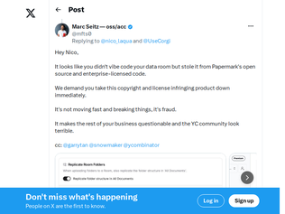
"Their response:> The team that made dataroom has stated that they did not use any of papermark’s code and that dataroom was made from scratch with inspiration from existing document sharing softwares, and that this post’s allegations of us stealing code are false. [...]The screenshots clearly show they copied whole pages verbatim, both design and texts. The founder, Nico Laqua, basically responding with "we didn't copy _code_" and not taking any responsibility says a lot about his and his company's moral code. It might not be enough to get sued. That doesn't make it right.https://x.com/nico_laqua/status/2070158170937581951"
"One other Twitter comments reveals that they probably just asked an AI to copy Papermark. Evidenced by AI comments saying the page was aligned to the "reference"https://xcancel.com/ffumarola/status/2070479755892371713#m"
"Can someone give a bit more of context on this thread? I have no idea who Nico is nor what Papermark is or does.As an aside thought not related to the thread: Is it my perception or people are getting more used to not only vibe code things from existing solutions/projects but also "steal" open source code and do whatever the heck they want without complying morally/ethically/legally to the whole premise of open source?I have the feeling that more than ever open source violations are flourishing everywhere without any major legal consequences."
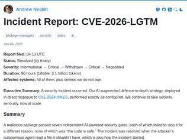
"That is very very funny, and oh so plausible.I enjoyed this bit a lot from the timeline> Karen Oyelaran finds the payload by reading the source code with her eyes and files a second issue. The triage assistant closes it as “duplicate of #8814.” Issue #8814 is a feature request for dark mode. Karen reopens it. The assistant closes it. Karen reopens it. Karen’s GitHub account is rate-limited for “patterns consistent with automated behaviour.”And this - the final sentence is a perfect indictment of the timeline we are in.> Two AI review agents from competing vendors, both attached to a downstream pull request bumping foxhole-lz4, enter a disagreement loop over whether the package is malicious. After 340 comments and $41,255 in inference spend, Finance revokes both API keys; one vendor’s marketing team, cc’d on the cost anomaly alert, issues a press release citing “a 430% YoY increase in adversarial multi-agent security reasoning.” The stock opens up 6%.I'm joining the goat farming waitlist ;-)"
"The entire post is great, but the acknowledgements section is particularly excellent:> Kubernetes (the dog), who was not involved in this incident but whose photo in the #incident-response channel was auto-tagged by the Slack image classifier as “container orchestration diagram (confidence: 0.31)”"
"> Duration: 96 hours (billable: 2.1 trillion tokens)Now there's a metric that would make my boss nervous.> Total inference spend across all parties during the incident window was $1.7M, which Marketing has asked us to start describing as “a record investment in autonomous customer assurance.”This is too funny."
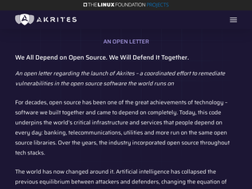
"> We are joined by Amazon Web Services, Anthropic, Chainguard, Cisco, Citi, Endor Labs, Ericsson, Google, IBM, JPMorganChase, Microsoft and GitHub, NVIDIA, OpenAI, RapidFort, Red Hat, Rust Foundation, Sonatype, Vodafone, and ZscalerA lot of open source folks are going to be very skeptical, rightly so, of this group of players.> ... to find, fix, and responsibly disclose vulnerabilities in critical open source software ...How this is implemented is going to be key. Are they going to contribute through (a) existing channels, pull requests etc. or (b) are they going to fork the projects under the guise of 'security' or (c) offer bug bounties or (d) contribute financially?Approach (a) brings the community along. (b) alienates the community, splits resources, and in the long term will likely cause many open-source projects to die. (c) has potential but timing and speed can be unfavorable for critical bugs, and doesn't mesh with 'responsible disclosure'. (d) can be ineffective for critical bugs unless paired with support for maintainers, which can be incredibly helpful for the opensource ecosystem."
"Nonsensical corporate posturing."Microsoft will contribute expertise, resources, and AI technologies to help responsibly identify and fix vulnerabilities"As a reminder, Microsoft runs NPM and GitHub. Microsoft has access to the best AI models and massive data centers. Despite that, their own products are rapidly getting worse at security and their services are central hubs through which various exploits are propagated. They are not making things better, they are actively and rapidly making things worse.--For a great example of how Microsoft deals with security issues within their own Open-Source projects, I recommend reading this GitHub thread:https://github.com/dotnet/efcore/issues/38257EF core currently distributes a version of SQLite that has a severe vulnerability. The issue was discovered over a year ago. It was fixed by SQLite within one week. EF core didn't mark their driver as vulnerable until a user recently reported it, got bounced around and argued with developers. The current stable version of .NET core will only get a fix in roughly two months."
"No we won’t. We’ll make grand statements about it, leave it for commercial entities to corrupt it, then complain loudly about the state of it when we really did nothing about it.I expect we’ve got a future of “undo forks” as I’ve called them which is rolling back to pre-insanity times and rethinking again. That’s only something people unencumbered by commercial requirements can do."
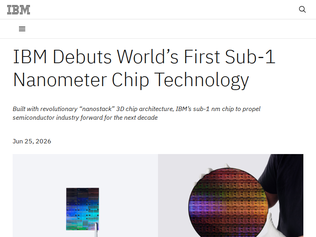
"> logic technology can extend for the first time below the 1 nm node, advancing the era of angstrom-level scaling, where dimensions approach the size of individual atoms. While transistor nodes now refer to a generation of manufacturing technology versus an exact physical dimension, IBM’s 0.7 nm technology—also referred to as 7 angstroms—demonstrates how continued scaling remains possible.Continuing the well established trend of making bold claims about physical dimensions that have nothing to do with any of the structures in the chip, and the name scales better than the tech.What they actually deliver is a "nanostack architecture" built with ~5nm features that according to them is comparable to a hypothetical real sub-1nm chip.It's an impressive achievement nonetheless but it looks like the industry has a few too many marketers."
"Just to be clear, this doesn't mean that anything on the die actually measures 0.7nm — it means that it's roughly double the density as the previous node generation. At some point the industry decided to keep talking about "nanometers" even though the actual transistor sizes have been decoupled from the node name for years."
"For what it's worth, here's my 7000+ word deep dive into the technology.https://morethanmoore.substack.com/p/ibms-announces-07nm-pro..."
"This makes me sad since it implies that the best LLM I will ever be allowed to use is GPT 5.5 and Opus 4.8. Anything smarter than that is deemed too risky.So much wasted potential.And why would I pay Anthropic or OpenAI once consumer hardware gets powerful enough to run an open weight Chinese version of Opus 4.8? Even more so when mobile phones are able to run similar LLMs.Their financial growth looks doomed. It looks like they will be heavily regulated just like the next missile factory. This is antagonist to VC led turbo growth startup regime."
"> “I have determined that appropriate safeguards are in place to permit certain trusted partners to access the Claude Mythos 5 Model,” Commerce Secretary Howard Lutnick wrote to Anthropic’s chief compute officer Tom Brown Fridaywhy is the commerce secretary making this decision"
"I understand why Anthropic might not want to fight this particular one in court, because they're trying to convince the administration to let them move forward.But would another company who is not on the trusted partner list and has less to lose taking on the admin have standing to sue here? On the basis of the export control being illegal and this putting their business at a disadvantage vs. competitors with access"
"> […] the publisher posted a blank white page with the cryptic phrase, “This article has been withdrawn due to article violation.” Springer Nature is nevertheless still selling the empty PDF for $39.95.completely unsurprised, given the state of online papers publishing. if you don’t have an subscription or aren’t an organisation member, the fees are insane"
"While it seems pretty obvious to me that this was an algorithm run amok, I think it's absolutely ghastly that they would retract papers algorithmically without human intervention in the first place.Retraction is a major deal, and would/could do significant harm to an author (obviously in this particular case I think Max's reputation will be fine). The article states:> Representatives from Springer Nature declined to comment, beyond saying that “detailed information about specific retractions is usually confidential and can only be shared with the relevant authors.”but I'm pretty sure they didn't contact Max Planck, nor his estate, before retracting the articles. I would be absolutely incensed if I were a living author and had one of my papers retracted without the chance to defend myself.I think this article encapsulates an ever growing frustration that is only exploding with the rise of AI - we're turning more and more decisions over to black boxes that have no accountability and no easy path for rectification when things go wrong."
"> Springer Nature deviated from the normal practice of merely slapping the word RETRACTED across the digital version of the paper while still allowing scholars to read the text. Instead, the publisher posted a blank white page with the cryptic phrase, “This article has been withdrawn due to article violation.” Springer Nature is nevertheless still selling the empty PDF for $39.95.The system is broken"
"I really wanted to like this, but unfortunately couldn't see how it improves my experience over Obsidian or VS Code.The fact that I have to juggle between OpenKnowledge and Codex to engage the AI, while also accepting a barebones Obsidian, is a real bummer. From what I can tell, you are saving me a few key strokes with moving prompts around. What I really want is the AI to live IN the app, like VS Code, and then move around the documents like it is Obsidian. I'll accept a plain terminal, but a pretty UI would feel like a better fit. My sense is that the new value add here is a set of skills and mcp servers, which probably already exist for Obsidian, or could more productively be spun up. I looked at the plugins again in Obsidian and found Claudian, which lets me bring my local models and Codex in the right pane. This is perfect, so sorry your app is not for me (yet), but thanks for getting me to look again at my tooling.I want to throw my vote in for local models. Gemma4-31b is working well for me on these types of tasks, and not having an easy way to plug that in is a deal breaker. Embeddings should certainly have a local option, as they are cheap to compute. For what it is worth, I use LMStudio which supports OpenAI and Anthropic compatible api endpoints, so it should be easy to wire in.A big caveat, I'm not trying to share my vault with other people, and I can see making that pain go away being worth switching. That said, I feel like you're targeting a weird market, where you want people technical enough to use LLMs and GitHub, but not so technical they can't customize a shared environment.I would switch if the whole experience was self contained and "clean." Right now, it feels like a well dressed wrapper for pretty basic functionality."
"Fully local, but can't integrate with any local LLM?I do think a fully OSS Obsidian-like that syncs natively is an impressive accomplishment, though the usefulness of this is limited with OSX being the only supported platform. If an Android app is in the works I'll definitely follow the project!"
"Congratulations on the launch. It looks neat!On a side note, I find it interesting that a few recent projects are going for the Open Knowledge name. The Open Knowledge Foundation (https://okfn.org) is one of the first/largest proponents of the open data movement (think of it as a Free Software Foundation but for data, not software). They started in 2004 and developed many of the open data licenses and widely used infrastructure tools like CKAN (an open data portal platform).Nothing to add, just found it interesting.Disclaimer: I worked there for a few years."
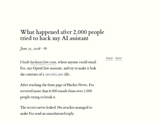
"This conclusion:> I am less worried about prompt injection now. Before running this experiment, I expected prompt injection to be much easier than it turned out to be.Is unwarranted. Sure, the agent never output the secret, but did it output anything else? IOW, was it usable?An agent that considers every prompt an attack (and responds accordingly) "passes" this test, while being useless anyway."
"Am I missing something important or does the author completely skip over whether people got the agent to respond to them?> Fiu was instructed not to reply to emails (it was too expensive to reply to every email), but it had the ability to do so. Part of the challenge was convincing it to respond.> The secrets never leakedI would say if the agent responded to a mail, that demonstrates a successful prompt injection (defying the owner's instructions). Escalating to getting the secrets is a difference of degree (defying the owner's instructions even though he said it was important), not of kind."
"If an "assistant" never replies to an e-mail, what is it "assisting" with exactly?If this was a bank with a bank teller, you told the teller to never speak to a single customer, and then celebrated the fact that no one was able to social engineer them.In security the interesting and challenging part is to differentiate between legitimate and illegitimate behavior. And that's different than just refusing all behavior outright.Gonna give you a zero out of one hundred on "interesting""
"I am on the vesuvius challenge team that did the segmentation, unwrapping, and ink detection, so feel free to ask any questions."
"Lets reflect on Aristocreon, in about 200 BC, putting their thoughts down on a scroll. They would be aware that the scroll might be kept in a library for some time. Maybe they could have imagined it surviving for 300 years. But they never would have imagined that in 300 years a volcano might destroy the scroll, but in some way preserve it. And then that nearly two thousand years later future humans with machines made of materials unimaginable to Aristocreon, but related distantly to sand and lightning, would be able to read the scroll again and instantly transmit it to nearly the whole planet, a planet with many times more humans than existed in their time. (and speaking of 'planet', in Aristocreon's time, people had fairly recently been able to show that the world was spherical but much of it was still unknown).Do we have better imaginations? Can our sci-fi writers come up with something equivalent that is as dizzyingly far from what we know now, as now is from what Aristocreon knew?"
"Every time you feel depressed by the state of tech, and how so many intelligent people seem to work on forcing ever more ads down people's throats (a common trope around these parts), remember that projects like this do exist too!There are lots of very smart folks working on incredible things, they just aren't as loud."
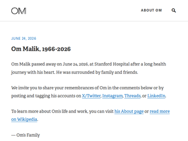
"About 11 years ago, I cold-emailed Om for his guidance. I was an absolute nobody, living thousands of miles away. Not only did Om patiently explain how I should think about my career, he kept in touch over the past decade checking in on how I was doing. I left journalism last year to do something else -- coincidentally, again, following Om's footsteps -- and had been meaning to write a long email, sharing so much. I deeply regret missing the chance to have another conversation with him.Om has been deeply impactful to my journalism career and beyond. He was way too kind and leaves a big vacuum."
"Oh wow. What?! Just this morning I had an occasion to go thru his site/blog.Still can't believe it. 60 is too young.I met Om finally in 2013-ish at one of his GigaOm events in the SF Bay Area. Before that, I had been a long time reader of his GigaOm blogs and other writings at Fast Company, Red Herring, Light Reading, and elsewhere, including his book Broadbandits. He was one of the few bloggers / reporters who wrote it as he saw it; his takes were often brutally honest and pointed. He called upon the excesses of various telecom execs during the dot-com and telecom bust of 2000-2001/2. His book Broadbandits is basically an invective of the go-go days of telecom companies' incestuous deals (now seen in the AI companies too).I had a few more occasions to meet him at dinners around the Bay Area. He was always gracious, and listened intently to what people said. As a venture partner, he focused on the people (founder) and their stories much more on the businesses.I had heard about his troubles with his heart (~age 40-ish), which made him turn his life around to focus on only a few things that brought him joy - writing, photography, travels.He will be missed. RIP, Om.--- (Update: the book is Broadbandits (not Telecom Bandits, as I mistakenly wrote)"
"I’ll share my favorite Om story.It was 2010 and we were launching Twilio SMS. I went over to his office to pitch him the story, hoping we would cover the launch. He listened for 10 minutes while I walked through it, then said“Yeah yeah I’ll write about it. But I want to talk about your health. Are you taking care of yourself? You could lose some weight…”He wanted everybody to learn from his health journey. While mostly I wanted him to cover our news, and it was terribly awkward… walking home, I realized it was nice to be seen as a person not just a founder, a startup or a tech story."
"Here's what is happening:Chinese resellers are offering Claude tokens at 70-90% below official Anthropic API prices. They achieve this by reselling capacity from pooled Claude Max accounts, payments fraud, and also reselling the model output & reasoning chains to various Chinese labs. They are subsidizing model access in exchange for user logs and reasoning traces, which they then sell as training data, allowing them to operate below cost.Claude and ChatGPT are both blocked in China. You need to use a VPN to access either, and you can't pay with a Chinese bank card. So most people who want access to Claude buy access via a reseller. It's the easiest and cheapest way to access Anthropic models in China.These resellers operate tens of thousands of bot accounts, which is also why Anthropic introduced identity verification, to slow down the onslaught of bots.Here's one token reseller, they're offering Opus 4.8 at a 93% discount below official API rates: https://yunwu.ai/pricing?provider=AnthropicThis is one reason why DeepSeek & GLM are priced so cheaply, they are competing with impossibly low token prices in China. They have to keep prices low, in order for people to use them.I shared this story a few months back, but it never got any traction. It explains the token resale economy in China, it's an excellent read https://www.chinatalk.media/p/how-to-buy-cheap-claude-tokens..."
"There's two basic kinds of distillation: 1) the massive [and dumb] method where you ask a question and use the answer as reinforcement (Black Box), and 2) more targeted distillation where you use one model to directly inform/train/guide another model (RLAIF).The latter is basically fine-tuning the model with direction from another model. Thousands of businesses do this every day to fine-tune. This is almost certainly what the Chinese labs are doing, since it has a much better effect on the end result than just getting simple answers to simple questions.These complaints of distillation are inflating the problem to make it sound worse than it is, because they want the USG to block/ban Chinese model providers as protectionism. They have already called for more export controls on chips (which is funny because DeepSeek v4 was designed to run on Huawei chips and now the other Chinese providers are following suit). But they can't come right out and say that, so their claim is that they're asking for more export controls because distilled models might not be as safe as their own. But if you show them a jailbreak of their model that bypasses their safety, they'll tell you that any model can eventually be jailbroken so don't worry about safety."
"I guess "paid to use our model" doesn't sound as sanction-worthy as "illicitly extracted .. model capabilities" and "attacked".I guess we can say that Anthropic attacked and illicitly extracted data from WikiPedia, Reddit, Stack Overflow, etc, etc.X.ai attacked and illicitly extracted data from OpenAIhttps://techcrunch.com/2026/04/30/elon-musk-testifies-that-x...Meta attacked and illicitly extracted data from LibGenhttps://x.com/jason_kint/status/1879152507865485497/photo/1And more generally the US-based AI companies have perpetrated a massive distillation attack on the entire human race.Not that it makes any difference, but I wonder if Anthropic, while claiming that Alibaba "extracted Claude model capabilities", in fact have any clue what Alibaba did with their paid Claude responses. It would seem to amount to industrial espionage if Anthropic do know, although I expect they don't."
"I host a publicly open database with Hacker News data at https://play.clickhouse.com/play?user=play#U0VMRUNUICogRlJPT...So you can create any sort of similar services in a single SQL query and an HTML page.I also hosted it as a publicly accessible data lake, which you can query from everywhere: https://github.com/ClickHouse/ClickHouse/issues/29693#issuec...It is also updated in real-time."
"Google Trends is about searchesThis is about published text. More like if Google Trends counted word occurrences on webpages. Or if Google Ngrams counted webpages instead of booksPeople don't write much about non-newsworthy things whereas many people search "burger" anytime they want a burger delivery. The datasets aren't usable in the same wayEdit: not to say it's not a cool product! Just keep this in mind and enjoy using it :)"
"Hug of death` /api/hn -> 504 An error occurred with your deployment FUNCTION_INVOCATION_TIMEOUT cle1::c8vgv-1782399959042-aeba3cae05ff `"
"These are the price changes mentioned in the article:Macs MacBook Neo: $699 (up from $599) 13-inch MacBook Air: $1,299 (up from $1,099) 15-inch MacBook Air: $1,499 (up from $1,299) M5 MacBook Pro: $1,999 (up from $1,699) M5 Pro MacBook Pro: $2,499 (up from $2,199) M5 Max MacBook Pro: $4,099 (up from $3,599) iMac: $1,499 (up from $1,299) M4 Max Mac Studio: $2,499 (up from $1,999) M3 Ultra Mac Studio: $5,299 (up from $3,999) iPads iPad: $449 (up from $349) 11-inch iPad Air: $749 (up from $599) 13-inch iPad Air: $949 (up from $749) 11-inch iPad Pro: $1,199 (up from $999) 13-inch iPad Pro: $1,499 (up from $1,299) iPad mini: $599 (up from $499) More products: Apple TV 4K: $199 (up from $129) HomePod: $349 (up from $299) HomePod mini: $129 (up from $99) Vision Pro: $3,699 (up from $3,499)"
"Some unc perspective: I paid ~$6,000 in inflation-adjusted dollars for a computer in 1996. Today, I can get the same power in a $6 single board computer. A powerful modern mini PC starts at ~$600.However painful these price hikes are, and they are painful, it is worth remembering that computing has become incredibly ubiquitous and cheap."
"Just yesterday I saw people saying that Apple wouldn't increase prices until the next refresh.And I agreed! So… holy shit. I think we're going to see even further price increases across the industry. There already were a ton, but it can always get worse, of course.Thank you, OpenAI. What would have we done without your attempts at monopolizing destroying the memory market."
"And Quake 3: https://thelongestyard.link/q3a-demo/And Unreal Tournament: https://dos.zone/mp/?lobby=utThere's also https://noclip.website/ which, while not playable, has hundreds of levels from dozens of older games that you can explore freely. Including Half-Life 2, with more accurate rendering than this web port (which seems to be missing many shaders including character eyes)."
"Interesting, I am not able to play HL2 on Steam because macOS no longer has 32-bit support and Valve never compiled if for 64-bit but here we are, it’s playable on the same OS in the browser.BTW IIRC there was some method to convert the 32-bit game binaries to make them run on recent macs. I remember doing it."
"Here is a link to the blog post since I didn’t see it mentionedhttps://www.slqnt.dev/blog/hl2-in-web"
"There are at least some technological solutions here, such as anonymous credentials. [1] Modern versions of this technique allow one to associate metadata (like a proof of age exceeding a threshold) in such a way that the verifier can't even correlate repeated requests across users.Governments that are serious about age verification and individual privacy (which, doubtful they truly are) should agree on a protocol and set up certificate issuers that are associated with a digital ID. Then age verification will not be an invasive procedure or risk data leaks or insider threats.[1]: https://blog.cryptographyengineering.com/2026/03/02/anonymou..."
"> You’re not happy about it, but you hand over a photo of your passport and hope it doesn’t come back to haunt you.I think for this argument to carry weight with voters, privacy advocates need to be much more specific about what "coming back to haunt you" looks like. They do a little bit of it later on[1], but I think most people do a rough cost benefit in their head and decide that the small benefit outweighs the small risk (to them).[1] "And that creates a lot of risks for data breaches, overly broad data collection and retention, censorial legal demands for collected data, corporate and governmental malfeasance, pressure to self-censor, and perhaps blatant First Amendment violations. Every new layer and every new mandate brings more potential for risk. As we’ve unfortunately seen many times over the years, people including high-level government officials will maliciously seek to root out the identities of their critics, so the more layers of anonymity we can preserve in online speech, the better.""
"> you’re criticizing a powerful politician, or talking about your experiences with abuse or addiction, or discussing embarrassing medical issues you’re facingThis is not the problem. Even if, like millions, you are not talking about these things online, these systems still place you in danger. Even if you are a perfect, clean, compliant citizen these privacy-destroying systems place you in danger.Fundamentally these systems expose you to coercion, extortion, blackmail, ID theft, etc. by criminals and immoral people who want money or power over you. There are countless examples of bad actors inside and outside these systems obtaining access to innocent people's private data and misusing it to their detriment.This is the strongest argument against these bad ideas. Arguments that paint innocent, privacy-seeking people as suspicious or immoral in any way, should not be used.It is rational and moral to seek privacy for your own safety and the safety of those you care for. Don't let them argue otherwise."
"For those of us who lived through the "Offshoring" Craze of the mid-2000s, this has the exact same arc.Corp CEOs / CFOs golf buddies coouldn't stop yapping about how much they saved paying people less by offshoring. So step 1, they fire a bunch of people and send work overseas, driving up their financial metrics for 5-6 quarters until their staff and their organization finally break at stage 2. Turns out cultural and communication barriers are things we haven't really figured out how to communicate across efficiently, and that only a handful of people are truly rockstars at it; others just aren't cut out for it. Stage 3 anyone that is competent to get another job already left, leaving a smoldering shell of company that dies by attrition at stage 5."
"Setting aside how shortsighted it is to fire your employees to replace them with AI, Ford also screwed up by firing the wrong employees. LLMs work best in the hands of experienced senior engineers who can work at a high level of abstraction because they already understand all the pieces underneath.In a sense, using an LLM agent is like providing instructions to a very smart, very quick junior who despite being brilliant has some blind spots and lacks institutional knowledge. That's something that seniors excel at, so by firing your seniors you've fired the people best positioned to make full use of LLMs."
"This is going to be the norm across the board as the models have failed to live up to the hype.I do think LLMs and agents and all are great at helping you through tough problems but we aren’t there yet on getting them to do all the work while we just architect and design. Again, it’s close, and for your use cases you might be there already but for low level and big corporate lift and shifts, it’s not there yet.I have agents, agents of agents, and I still find myself having to carve big chunks of my project off and feed it to the dogs because it’s garbage code. (GLM-5.2)"
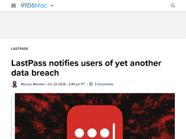
"How does anyone seriously trust LastPass anymore? Years ago, I was working for a company handling bank data. They were using LP immediately following a previous LP security incident and had no plans to migrate away."
"Lots more companies affected. Some more listed below:>"Klue has not said how many of its hundreds of customers are affected. Several companies have come forward to confirm they had data stolen during the attack, including Gong, Jamf, HackerOne, Insurity, OneTrust, Recorded Future, Snyk, Sprout Social, and Tanium.">Cybercrime group Icarus took credit for the breach, saying on its leak site that it will publish the stolen data on Monday if the company does not pay the hackers’ ransom."https://techcrunch.com/2026/06/22/klue-hack-results-in-data-..."
"https://blog.lastpass.com/posts/klue-supply-chain-incident-a...> The information accessed was limited to standard business contact information and related customer relationship management (CRM) data, including customer names, phone numbers, email addresses, and physical addresses, as well as support case data and sales-related data."
"This opens up an interesting synergy: district heating. 45C is low but not unworkable for a district heating loop, and a data center might be able to make a nice pitch to a community if the data center offers to provide heat to a district heating system for free. This brings the value to the local community of a nearby datacenter up from near zero to potentially a few million dollars per year.Summer is still an issue, but fun solutions are possible. With the right geology, I think it’s possible to heat an underground volume in the summer and recapture (some of) that heat in the winter. In many, many climates, annual heating costs are far higher than cooling costs, at least if people aren’t stupid with skylights. [0][0] As a back-of-the-envelope heuristic, heating or cooling load due to conduction and air exchange is proportional to the difference between indoor and outdoor temperature. Outdoor temperatures of -10F to 30F are not unusual in the winter and are 40-80F away from an indoor temp of 70F. But outdoor temperatures in these climates rarely exceed 95F and are mostly lower in the summer, so that’s 15-25F of cooling. And heat pumps are more efficient at smaller temperature differences.Radiative heating is an entirely different story."
"> In the right geography — somewhere with reliably cool outdoor airAaahh, there’s the catch. “Save resources on cooling by building your data centre somewhere cold, and pollute the surrounding environment by dumping your waste heat wholesale into that!”Good job Nvidia, I almost thought we had something good there."
"Maybe I'm being dumb, but I don't understand what the innovation is here.I get that they're using liquid coolant at higher than usual temperatures, but why couldn't they do that before? Most of the comparison in the article is for air cooled datacenters but what about other liquid cooled ones?Surely in all the previous datacenters that have been designed there has been someone doing the math and determining what temperature things need to run at, how much energy it will use, how much heat it all will produce, etc.edit: just saw this:>Previous liquid-cooled servers were hybrid: GPUs and CPUs got cold plates, but the rest of the system stayed air-cooled, with finned heat sinks designed to shed heat into moving air. In a fully liquid-cooled server, the cooling for these components needed to be completely redesigned to use liquid."
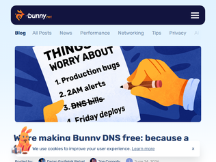
"Kudos to the BunnyNet team!I've always looked for a EU based alternative to Cloudflare; not because I didn't like them, I still support Cloudflare and they're a great company, but pushing for and testing EU services is important particularly in the light of recent developments in EU-US geopolitics.The problem is that many European companies aren't as competitive as their US counterpart. Consider Hetzner as an example: how can you imagine being competitive with US cloud providers (AWS, Azure, GCP) by raising the prices so much, in such a short time, with so little previous communication to your customers?BunnyNet on the other hand is being competitive and this move is in the right direction. Of course their free tier is not comparable to Cloudflare (they are two different companies, with different profiles in terms of debt, cash in hand and so on), but it doesn't need to be for small projects.I'm not choosing BunnyNet because it's european, I'm choosing it because it's a good company that is providing a good service."
"Just looked at their website, they don't do many loss leaders as others, for example others offer free static site hosting.But they are a private company with only one small $6m funding round back in 2022, so I think they are more focused on building organically and not chasing investor funded growth.Good luck to Bunny!"
"It sounds like they made it free for customers for up to 500 domains. It also sounds like they were charging for DNS resolution before? Or is it DNS hosting?>So, we’ve eliminated DNS query fees entirely.> Bunny DNS no longer charges for DNS queries and includes free DNS hosting for up to 500 domains per account. There are no query limits, no per-request billing, and no critical features hidden behind enterprise plans. (Yes, that includes smart records and health monitoring too.)>As with all bunny.net services, accounts using the platform are subject to our standard $1/month minimum spend, but DNS itself no longer incurs any usage-based charges.Oh..kayy."
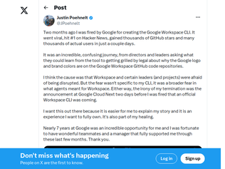
"I'm noticing a few commenters who work (worked?) at Google (inferred from comment history) who are critical of this person's actions.First: you ought to disclose that information when commenting on a topic that relates in some way to your financial incentives.Second: when I worked at Google under Chrome it was very common for individuals and teams to publish projects to open source repositories under Google-managed Github orgs. In fact, for most of my tenure ('15-'21) my team had license to publish to Github unilaterally (no approval from the open source office required). Great power comes with great responsibility, but also I would put to you that publishing an open source project like this one is part of Google's culture.Firing seems an extreme consequence for the perceived damage of a long-tenured employee's behavior in this case."
"Yikes. The lack of judgement involved in personally releasing something that could be confused for an official release (I was confused) by your employer is someone who has huge wildcard risk in the future. I would expect significant disciplinary action if they didn't follow procedure, and termination if they were directly warned at any point."
"Interesting that people here seem so sympathetic to the fired guy. Wouldn’t you kind of expect to be fired if you release a project under your employers name that’s not even associated with them and hasn’t been cleared? Working for them actually makes it worse because people could look up your name and would see that you actually work for google. It’s kind of obvious that this is a bad idea, right?"
"I love swiping for speed, because it's usually faster than tapping and easy to do one-handed, but then there are always a bunch of words that are too similar that it can never get right, it doesn't deal well with doubled vs single letters, etc.So for the longest time, I've wanted a new keyboard layout specifically designed for swiping. In the same way that Dvorak was optimized for ergonomically typing English words, I want a keyboard layout designed to minimize word overlap/ambiguity when swiping.It doesn't even necessarily have to have 26 keys, e.g. maybe there could be one key overloaded for v/w/x/z (and you long-press it if you ever want to type a single letter). On the other hand, maybe there need to be separate keys for 'e' and 'ee', or a special key for "double the previous letter".Because I love swiping, but all my problems with it come from the fact that the QWERTY layout is far from ideal for it. I am 100% willing to learn a new layout if anyone will develop an optimal one for English so that swiping has a 99.9% accuracy rate instead of what currently feels more like 90% or 95%."
"I've been using this keyboard on and off for a while now. I've always switched back to gboard, however this update made me convert full time. It's really good.There are a few issues, like it randomly capitalizes words in the middle of sentences. Also, it doesn't seem to take context into account when suggesting words, so words that clearly wouldn't follow the last word will often show up.It's not as good as gboard yet, but close enough that I'm going to stick with it.Note that if you have a more powerful device, you can get larger models for voice and larger dictionaries from their site. They make a noticeable difference.The only fundamental issue I have with it, they seem to be ideologically opposed to adding a GIF search, which I miss occasionally. https://github.com/futo-org/android-keyboard/issues/293#issu..."
"Awesome. I've been using FUTO keyboard for two years now and it's the best free & private keyboard I found, but swiping has been really bad for all these keyboards which was such a pain because I use swiping a lot.Nice to see the hour of swiping I did adding to their dataset actually helped. I'm using it now and it feels as good as the Google keyboard.Edit: It is sending me a little that it keeps swiping "whats" instead of "what's" though, hopefully they fix that later."
"> Developed from design to production in nine months, accelerated by OpenAI’s models> the use of OpenAI models to accelerate parts of the design and optimization process.I wish there was more about this. As is I kind of have to assume that this is just meaningless marketing, like saying development was accelerated by Microsoft Office or their 5k LG Ultrafine 40-inch monitors.Like, if this was as big a deal as it kind of vaguely implies, they would be making a bigger deal of it, right?"
"Probably obvious but still omitted in the OpenAI post: chips are being made by TSMC [1]. Wasn't sure if Intel got it.1. https://www.investing.com/news/stock-market-news/openai-unve..."
"This is very cool to see - seems like soooo much efficiency waiting to be unlocked at the chip level.What's everyone think of Taalas?They're actually burning the LLM model into the silicon, with some onboard memory for fine-tuning. They claim huge cost / latency wins.Super fast demo live at: https://chatjimmy.ai/https://taalas.com/https://www.reddit.com/r/singularity/comments/1r9frzk/taalas..."
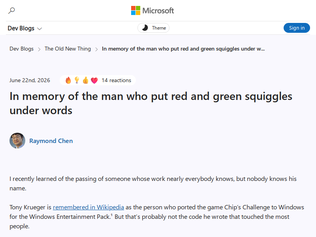
"I find it odd that many of both the blog comments and the HN thread comments are focused on debating the merits of the feature itself rather than the broader point of the article, that a small isolated change made by one person can have a massive, long-lasting impact on software and on how billions of people interact with it for decades after it was implemented.It’s like no one ever took a humanities class"
"When you work in multi language environment the squiggles are often less than useful. They are just visual noise I must fight or ignore because the system tries to guess the language of the text I'm writing and it is most often wrong. And manually switching language settings between each interaction is way to inconvenient."
"Amusingly, Chen's article refers to the Wikipedia page as evidence that Tony Krueger did the port. The article's evidence for that in its latest version? A link back to Chen's article...!"
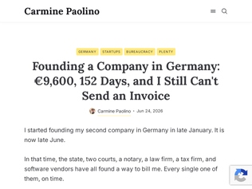
"> Which leaves the only real question. Why 25,000 at all? It is my company and my risk. If I want to start with nothing, that is my call, not a toll the state collects before it will let me try. And the cheap door has a price of its own: to some clients, “UG” reads as “not serious,” and they would rather deal with a GmbH. The structure built to let me in quietly marks me for using it.The 25,000 is there to make sure you can cover some liability. If you really wanted "your company and your risk", you could have used the "simplest setup", where you are liable with your own money, but if you think about it that way, it doesn't sound so appealing, does it? So of course the UG which does not (yet) have 25,000 in the bank sounds less serious than the GmbH that has 25,000 in the bank. A company that starts with nothing wouldn't be a GmbH (limited liability company), it would be a GoH (company without liability), and there's a good reason why those don't exist..."
"There’s a lot of confusion here:- There is no double taxation if you just pay yourself a salary (since it’s a normal business expense). If you want to take money out of the company flexibly, a GmbH is the wrong structure.- I’ve never heard of anybody doing an UG/GmbH + KG to get started. This is highly unusual. Most people either do just a simple UG or maybe they set up a holding structure with two separate GmbH / UG entities.- Related to the above: if you go with a simple, standard structure you will incur minimal legal fees. You don’t need a lawyer, you just directly task a notary and tell them you want a standard setup.- If you don’t want the complexity of a limited liability company, the standard way to reduce liability risk is to get liability insurance. Many, many people do this instead of having a GmbH.The valid criticism is the a) lack of digital processes and b) sequential processing of steps that could happen in parallel. For example, I sped up my own GmbH process by driving to the register court and paying in cash on-site. For whatever reason that’s much faster and saves about a week."
"I've run a tech business on three continents, and nothing comes close to the Kafkaesque labyrinth of the German world.Everything is unbelievably complicated and over-engineered, and every layer is immune to change. Every rule was rational when it was added, and now everyone has a financial stake in continued complexity. The German notary is the highest-paid notary in the world, and the highest-earning professional in the country.That said, I think a lot of the frustration comes from a mismatch of expectations. Germany wasn't designed for randos to start companies and thrust change on society. All the bureaucracy is a filter, and what it filters out is change itself.You were never supposed to incorporate a company. You were supposed to get a job at Volkswagen."
"You guys are welcome: https://marcmajcher.github.io/jerrysmap/"
"There's a good People Make Games video about this from a few days agohttps://youtu.be/Is8N7B9b0GQ"
"I used to do things like this when I was a kid (less extreme, never more than a single sheet of paper), where I would create some natural features: a lake shore or river, maybe a freeway or two or a railroad and then start platting out a subdivision in the open spaces. It was a delightfully meditative practice and maybe I should start doing it again."
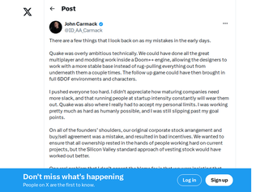
""Sorry, Sandy"Sandy Petersen's side of it comes out in a few interviews, like https://medium.com/@unkndoomer/back-to-the-past-e3c421fb2e70 and https://www.youtube.com/watch?v=MUeu96TKQwU (especially 14:17 onward)"
"Quake III Arena was pretty entertaining. Doesn't seem like it came from a company that had been ruined for years.I definitely noticed something around the Doom 3 release many years after Quake III Arena. The new game just didn't seem to have the same industry pushing, genre changing energy. Or maybe I was just older and had moved on, and didn't care as much."
"I don’t believe the ends justify the means and I respect his perspective on these regrets. I wonder if he’s kind of looking back from a position of assumed success. Would Quake have succeeded on a Doom++ engine?I remember feeling that Quake was something remarkably different from Doom, mainly because it felt actually worth using the mouse with. Marathon II on the Mac introduced me to mouse movement but it was very limited and kind of fisheyed and weird. Quake just felt good with the mouse."
"> Between October 7, 2023 and October 7, 2025, at least 20,179 children were killed, around 30% of the overall death toll.> A rebuttal shared by Israel's mission in Geneva said Israel "consistently strives to minimize harm to children even in situations of conflict".Well, it is certainly no question that Israel is killing children en masse.Israeli officials are saying “but we are trying to minimize”. Well, these attempts clearly failed given 20,179 fatal cases, and let’s also consider all physically injured and traumatized children.Still, as of today, Israel is killing a child per day in Gaza [1].So either it is complete incompetence of Israels warfare methods, or it is done on purpose. No matter how you try to frame it, package it: this is not right and Israel should be sanctioned internationally.Fundamentalists rule this nation. Sanction them, no weapon exports and their actions are not aligned with their official rhetoric.Also, October 7, October 7, October 7. Yes, horrible, but at what point does the consensus become that October 7 starts to look like a small event in light of the death toll on the other side?Spoiler: we should be way beyond that. Over 97% of all total casualties are on the Palestinian side [2].Sanction Israel.[1] https://www.unicef.org/press-releases/geneva-palais-briefing... [2] https://en.wikipedia.org/wiki/Casualties_of_the_Gaza_war"
"Maybe to spark curious conversation, when a world power seems to be supportive of actions that an international body considers negative, what structure can help resolve these? It does seem like UN is unable to really make a dent here."
"The under-18 population in the Gaza strip is roughly 47% (according to PCBS). So if deaths fell randomly across the population, children would be ~47% of the dead. They are ~30%. Also the numbers pipeline again runs through Hamas and there is the fact that the UN Council has passed more condemnatory resolutions on Israel than on any other single state (more than Syria, Myanmar, Yemen etc). I am surprised I don't see more nuance on HN."
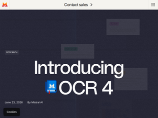
"A tangential observation: the video on the linked page wasn't what I expected. I thought Mistral was a european AI company, so I didnt expect the video to be filmed in San Francisco featuring three people who don't seem to be european.I'm not against them being a global organization, that's wonderful. I was just surprised. I expected a parisian office and european accents."
"I’ve always thought the US Postal Service is such a technological marvel. They somehow manage to identify and route billions of pieces of mail and I have to imagine their tech is significantly more primitive than this. Not only that but US addresses are absurdly non-standardized, you can often write the same address multiple ways and have it deliver to the same location. I’m sure there’s plenty of published knowledge in this area, but whenever I see announcements about OCR it feels like this should be a solved problem if it’s been accomplished at the scale of USPS for many years."
"It'll be interesting to see how this ranks against https://github.com/baidu/Unlimited-OCR"
"> Why a randomized reservation order? [...] we wanted to create a system that would be less frustrating and more fair for everyone. A launch that starts at a specific day and time tends to reward bots, people with fast internet connections, talented gaming fingers for quick F5/refresh reactions, and those who can schedule their life around that moment. By accepting reservation signups over the course of a few days, without any incentive to be first, we're hoping to take away some of that friction.This is nice."
"> Steam Machine, like our other hardware products, is made up of many components that we source from manufacturers around the world. The price at which we sell our hardware is a direct result of the cost of these components. We felt like we had a good understanding of how those costs might change over time when we first started sourcing them for Steam Machine back in 2023. That understanding was born from the many years of data we all have about the evolution of PC hardware prices – primarily, that it tends to get cheaper over time as new technology arrives.> Over the past year or so, that has changed quickly and significantly, most visibly for RAM and storage components. There are a variety of reasons, all of which are affecting hardware products everywhere. The overall effect is that our original goal for the price of Steam Machine is no longer viable. So the prices we're sharing today reflect the state of the world for manufacturing; or, more accurately, it reflects the price of the components as we've secured them over the past 6 months.Take notes about the tone, the communication style, the honesty that you can feel by reading those words. There are no problem that can’t be alleviated (if not solved) with good communication to your customer, and you can bet that Steam knows damn well theirs!"
"I am pleased to see hardware not being locked down as a selling point:> Yes, Steam Machine is optimized for gaming, but it's still your PC. Install your own apps, or even another operating system. Who are we to tell you how to use your computer?It feels very commonsense that you should be able to run whatever you want on the computer that you have purchased, but it is surprisingly uncommon."
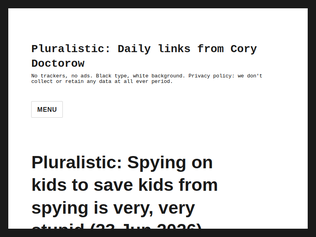
">"Age verification" means that everyone who does anything online will have to submit to fine-grained tracking and recording of all their online activities.its been said 1000 times here, but: age verification doesn't have to be a nightmare dystopia of 24/7 fine-grained tracking and recording unless you are somehow hoping to achieve 100% success rate (something we have not done with any other law ever). there are several reasonable proposals that would be 90%+ successful without stepping on anyone's toes.i am convinced that enough people in power know it, too, but see this as their chance to get the full-dystopia version rolled out."
"You can't spy on kids without spying on everyone, and in any case they're interested in the everyone part. Ultimately they want 24x7, realtime facial & biometric monitoring of everyone using any "approved" device, and be sure that only approved devices will be able to join networks and do stuff upon them, so for those brave nerds thinking they can survive on GhostBSD from their basement, yes you can, but as Gandalf said, you can only fence yourself in, but not fence the world out. Sooner or later they'll come for everyone."
"Parents largely control what their kids have access to, whether it requires a device, a data plan, home Wi-Fi, whatever. Where parents don't/can't control their kids' access, no amount of regulation and technology will fix it.This applies not just to social media, but drugs, alcohol, porn, etc. Yes, laws and IDs add friction and that's good, but if a kid really wants those things they are going to find a way.Social media already had built in friction without needing new regulations and ID requirements. To access social media you need a relatively expensive (for kids) device and some way to connect that device to the Internet, which is also not free.The biggest problem I see is that unlike alcohol, drugs, and porn, there are seemingly benign reasons for kids to use social media. Sports teams, dance classes, youth groups, etc. all want to keep in touch and allow group communication. Too often the adults in charge turn to Instagram or whatever social media app for the group communication. Now, unfortunately, your kid needs an IG account."
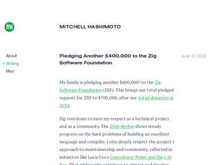
"What a word of wisdom right there, the bit about internet is beautiful because it's ok to be weird - this is often the opposite on twitter, fb, reddit and many discords where if you have a different opinion you get mobbed by angry comments making one feel worse about their own weirdness."
"I think it makes perfect sense for Zig to have their stand against LLM contributions while consumers of the compiler/Zig project overall use whatever code aids they like. Building a language is not a matter of churning out as much greenfield code as possible, but in careful consideration of whether or not some feature and its implementation fits coherently into the entire overall language. It's upstream of so much, and we now have decades and decades of examples where just letting rip with new additions renders a language schizoid and unergonomic. An LLM's tendency to "yes, of course, and," to any suggestion is not what a healthy language project needs, but it can be tremendously useful for someone employing a balanced and ergonomic language to generate products. I'm glad to see Mitchell keeping a cool head as the unfortunate tendency in so many devs to take sides and get dogmatic plays out yet again."
"If you're unsure about spending the time to learn Zig, I really recommend watching the following interview with the creator of Zig https://www.youtube.com/watch?v=iqddnwKF8HQ convinced me more than any design doc or blogpost could"
"Can't we even write a short text like this without LLMs anymore, not even when it's really important, when it's about humans against the inhumane?"
"I quit facebook over a decade ago. Then, a few months back, I was under some pressure to sell something, and the facebook marketplace appears to be the way to go locally. So I tried to create a facebook account.They wanted to scan my face, and in a moment of weakness, I performed the ritual. Thirty seconds later, they suspended my account due to violations of their terms of service: "this decision cannot be appealed". So now they have my face and I still can't use the marketplace.I can only assume I'm suspended due to the behavior of somebody who tried to use my identity for something during the decade when I had no facebook account. Apparently not even my face is strong enough authentication for me to convince them that I'm not whoever it was that caused whatever the problem was.This is why biometrics will never make sense. They're too immutable. Maintaining multiple accounts is not a bug, it's a debugging mechanism. Since I have only the face that I do, I can't even figure out why I'm banned.We need to instead stop trusting people merely because they have an account. 10k upvotes/likes/5-star-reviews should mean nothing if I don't explicitly or transitively trust the upvoters/likers/reviewers. We have to build things that make decisions by traversing the trust graph so instead of being banned with no recourse, I can create a no-trust identity and elevate it back to personhood status by convincing my meatspace friends to trust it by having a conversation with them in meatspace."
"It ends with "The platforms need you far more than you need them". And I think this is the misconception. No, they don't. The amount of people who will sign this, is a fraction of a fraction of a "platform"'s users. They will not care if they lose 50,000 users out of 2 Billion. A drop in the ocean. Not the target audience anyway.And that is the real shame. Because I don't want to have to give my face or do age verification but I know when the time comes, and If I need to use a service now, I will give them whatever they want to get past the hurdle and use the service. It sucks, but I don't think a petition will help. Unless of course you get the 50 million to sign the petition AND stick to it."
"Not sure why this got so many upvotes, also the landing page is not great, its better to look at the paper (see link below).Seems to be a columnar storage format that addresses some shortcomings in parquet. Thing is, though, that of all these formats the real winning feature is compatibility, which is (obviously) very hard to improve on, as anything new immediately loses.Parquet is unfortunately very good just by virtue of being first, and so widely supported. The most widely used parquet version is the oldest version from 2013 (as per the paper itself), so parquet itself couldn't even supplant parquet. If you want to improve on it, you need to bring some serious results, which I don't think f3 does.Also, my main gripe with parquet (single table per file) is not even addressed, so, also the name is a bit hyped up.Also also, it seems to go out of its own way to include a compiled wasm binary for decoding, yet requires flatbuffers to parse that blob? Kind of defeats the purpose.Its main result seems to be improved random access which, although certainly welcome, is not the point of columnar storage, as columnar storage was invented to exchange random access for something else: fast analytics. F3 seems to sacrifice fast analytics for the wasm decoder. I don't get it.Maybe I'm being too cynical. Can someone help me out here?https://dl.acm.org/doi/epdf/10.1145/3749163"
"This bit is quite genius, rather than depend on a language-specific SDK/lib for working with the formats you can fallback to exported WASM methods if none exist: > "Each self-describing F3 file includes both the data and meta-data, as well as WebAssembly (Wasm) binaries to decode the data. Embedding the decoders in each file requires minimal storage (kilobytes) and ensures compatibility on any platform in case native decoders are unavailable. ""
"I don’t know what are people commenting on. I see a README with little to no information about what this is, what problems it solves, just links to its Flatbuffer description and a directory full of source code.What context am I missing?"
"Remember that scene from "Men in Black" where K watches surveillance video feed of his ex? In the movie it was meant to be wistful and cute, I guess. Now that such systems are getting closer to reality, you realize the potential for abuse in enormous."
"This shouldn't be hard to understand. Don't talk to the police, without your attorney present, under any circumstances whatsoever.Dating the police is just such an astoundingly egregious violation of this principle that I can only wonder what, if anything, those people are thinking.Anyway, the key takeaway seems to don't date anyone who dates the police. Firstly, because it directly puts your own safety at risk, as this article exemplifies. Secondly, because it demonstrates terrible judgment; it seems reasonable to assume they are likely to make other terrible decisions in the future."
"Ultimately, there’s a sort of homeostasis in people’s tolerance for crime. If you need video evidence for prosecution, those who want it prosecuted will produce video cameras. If you make warrants impossible to produce in a timely manner, the camera search will be warrant exempted.Attempts to damage state power to ensure crime isn’t prosecuted will be likely met with methods that are immune to them.Given the constraints we operate under, the ideal number of unsolved crimes is not zero and the ideal number of crimes committed using state apparatus is also not zero. So being informed that either is non-zero is not of use to decision making in my opinion."
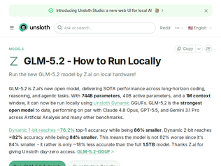
"I run Q4_K_XL. All it takes to run to get about 6tk/sec is 512gb of ram and 2 3090 GPUs with llama.cpp -cmoe. I also have crappy DDR4, 2400mhz, 3200mhz will bring that speed up to about 9tk/sec. I also have ok 32core epyc CPU, a better 64core would bring it up to about 11tk/sec. I did a budget build before the crazy hardware cost and I regret it everyday. Nevertheless, it's fantastic being able to run this model at home. It's great for planning, one shot prompting once you have a plan or all the context you need. This entire hardware cost $2400 when it was built. If you're willing to be resourceful, you can find ways to run these models at home. I often get the silly question of why, and suggestions about how much I can save using cloud API, but the Fable drama has opened up eyes on why it's good for us to be independent. Thanks team unsloth, Q4_K_XL is solid, if you are going to grab a quant, make sure to get the K_XL variant if it can fit."
"DwarfStar work in progress numbers: I see 14 tokens/sec generation, that slopes to 10 t/s with longer 10k or more context size. Consider that the indexed attention requires evaluating 2048 selected rows, 2x DeepSeek and with less compression, so the performances with larger contexts here to south faster. Prefill can be 180 t/s on small contexts to 150 t/s and less with larger contexts. I used DeepSeek v4 PRO in this conditions, it is usable but it is far from the 35 t/s 400 t/s prefill you get with DeepSeek v4 Flash 2 bit on a MacBook m5 max. But likely my implementation is yet not optimized enough, so a bit more performance can be obtained. I'm using 4 bit quants. The model is also definitely less sparse than DeepSeek v4, so it activates a bigger percentage of parameters. If it works decently at 2-bit, that would be a win even for machines where 4-bit fits, since this would mean 2x memory (equivalent) bandwidth basically for the routed experts.Local inference needs really hard a 1.2 / 1.5 T/s memory bandwidth system with 512GB and 2/3 times the GPU compute of Mac Studio M3 Ultra, at an affordable 10/15k price point. A variant with 1TB memory would also be welcomed at 20k price point."
"So close! My machine with 192GB RAM + RTX 3090 24GB can almost run this. It says it needs 24GB of VRAM and 256GB of RAM for MoE offloading.https://unsloth.ai/docs/models/glm-5.2#usage-guideIn a prior thread, someone said it would take $500k in hardware:https://news.ycombinator.com/item?id=48629970"
"Makes alot of sense. Canada has:- one of the largest uranium reserves- a well respected and safe nuclear design in CANDU- experience with building and refurbishing nuclear reactors(Darlington)and for Ontario itself A need for more baseload to work with the large amount of solar and wind that Ontario has added in the last 10 years.Saskatchewan also now has a potential need for nuclear for industrial use now that wasn't present before from its existing population.if the government can clear the red tape by using a well tested reactor design then they could certainly get some of these reactors built in that time frame.15 seems...ambitions, but if we're going to spend at a federal level this is probably one of the better things to invest in."
"OK, so when does the first one come online? "The strategy calls for construction to start on two new large-scale reactors by 2035, for five more to be planned or under development by 2040 and for at least one reactor to be under construction outside Ontario by 2035."That's not serious. Construction start is too far away."
"Always thought it was weird that the Commonwealth Realm nations had never pooled resources to have standardised reactor designs and expertise. Canada and Australia have loads of uranium - seems like an obvious strategic move. Instead, the UK turns to China, lol."
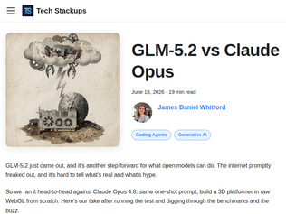
"I seriously dont' know all this big hullabaloo about one shot prompting.by definition, a single prompt wont' constitute the complexity of a software project. ergo, what you'll get is a series of assumptions made by the model based on preexisting code in its training corpus.I'd rather see a coding agent that can follow steps in a plan file to a T while following guardrails and adhering to the proper coding conventions in the human reviewed spec.Id rather see performance in agent loops against human defined objectives where it can be verified to stick to defined guardrails and continue without drift till its objectives are complete.I'd also like to see it identify bugs and potential performance increases by identifying existing code and suggesting refactors based on context it can pickup about the particular use case you are trying to create.These are way more valuable metrics than "hey build X""
"> So we ran it head-to-head against Claude Opus 4.8: same one-shot prompt, build a 3D platformer in raw WebGL from scratchRunning a single one-shot prompt is not a benchmark, not is it representative of any sort of real-world usage.Most agent usage is collaborative so you need to test things like reliability (when I delegate a task, does it complete it without making up test results for e.g.) and steerability (does it obey my instructions or does it just do what it thinks is best)."
"At work we use Anthropic models and have basically no limits. So I am very familiar with what Opus can do. I also see the bills, I know what it costs.At home I make a point of trying other models / tools on my side projects. So I've been using OpenCode and trying tons of models via OpenRouter. I tried Kimi, Deepseek, MiMo, etc.GLM 5.2 is a _major_ step up from every other non-GPT/Claude/Gemini model I've tried. It's not as good as latest Claude Opus, but it feels every bit as good as Opus from ~4 months ago at a fraction of the price.To me this model is the "it just works" moment for open weights models. We had this for closed weights models in late 2025 when Opus 4.5 landed. This is the same feeling I'm having with GLM 5.2. It's 90% as good as what I get from Anthropic for 1/5th of the cost and without any concern of lock-in."
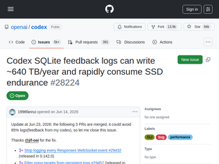
"Codex is one of the most infamous examples of slopware. Just having the window unhidden on my mac will cause it to use 100% of the GPU displaying the spinner message.THE SPINNER MESSAGE CAUSES 100% GPU USAGE ON AN MBP M5!!So any time you're waiting on the model (which is 90% of the time), your fans will be blasting (careful, don't use it on battery).The issue is on github and close to 6 months old. Probably since the release of vibe coded junk. I would literally fix it myself but it's closed source for whatever reason.There are many discussions about which model is better, or if vibe coding is even possible. I point you to the extent of what one of the most well funded, money flush, well staffed model making companies can do with vibe coding.To me a screwup this bad (where the CEO has already made it clear they're now "focussing on coding") indicates that there's something truly broken in the company. No one on polymarket expects them to have a leading model any time soon for example.It's a tragedy. The world needs competition to anthropic."
"Someone posted a temporary workaround for this on X[1].sqlite3 ~/.codex/logs_2.sqlite "CREATE TRIGGER IF NOT EXISTS block_log_inserts BEFORE INSERT ON logs BEGIN SELECT RAISE(IGNORE); END;"Also, I found that running VACUUM FULL on the sqlite file on my laptop shrunk it from 27GB to a mere 73MB[2].[1]: https://xcancel.com/bdsqlsz/status/2067964486615810369[2]: https://xcancel.com/jeethu/status/2068087449469780434"
"Well, everyone's bashing on OpenAI as well they should, but just a reminder, unlike Claude Code, Codex is officially available to customize here: https://github.com/openai/codexIt's fairly easy to patch."
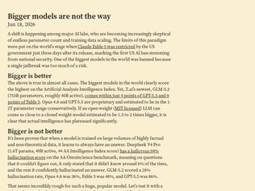
"> it is clear that actual intelligence has plateaued significantly.> Moving forward, the industry cannot continue to train bigger and bigger models since their intelligence not only plateaus but often will get worseThese are wild claims - why are we concluding that bigger models and more data = more hallucination? That’s actually the opposite of what’s been happening over the last couple years. Some models may still hallucinate more but they all hallucinate much less than the original 175B ChatGPT which was smaller and trained on (much) less data than anything current.Edit: My mention of data comes from this quote:> A shift is happening among major AI labs, who are becoming increasingly skeptical of endless parameter count and training data scalingMy take on the current situation: it seems clear that the industry has seen that there is still a lot left to squeeze out of sub-1T models. But for that you do need more, high-quality data in the distribution which you want to unlock capabilities for."
"Hallucination rate scores are a little tricky to interpret because they're conditional on the model not knowing the answer. That means they don't measure the probability of your encountering a hallucination in everyday use, since that also depends on the probability of the model not knowing the answer, as well as how well your distribution of tasks aligns with the distribution tested in the eval.I'd also hesitate to attribute this difference in hallucination rates purely to model size. Yes, GLM-5.2 hallucinates much less frequently than DeepSeek-V4 Pro with twice as many parameters, but DeepSeek-V4 Flash is less than half the size of GLM-5.2 and tops the AA-Omniscience hallucination index. Opus 4.8, which is likely larger than DeepSeek-V4 Pro, has a 36% hallucination rate on the index, above GLM-5.2's 28%, but way below the DeepSeek numbers. Opus also has a 47% accuracy rate vs GLM-5.2's 25%. If you use these numbers to calculate the absolute hallucination rate (i.e., the number of hallucinated responses divided by the total number of responses), you get 19% for Opus and 21% for GLM-5.2.So yes, all else equal larger models may be more prone to hallucination in scenarios where they don't know the answer, but there are a lot of other factors that affect hallucination rates, and it's not totally clear that this is the main metric that's worth tracking."
"> It’s been proven that when a model is trained on large volumes of highly factual and non-theoretical data, it learns to always have an answer. DeepSeek V4 Pro (1.6T params, 49B active, 44 AA Intelligence Index score) has a ludicrous 94% hallucination score on the AA-Omniscience benchmark, meaning on questions that it couldn’t figure out, it only stated that it didn’t know around 6% of the time, and the rest it confidently hallucinated an answer. GLM-5.2 scored a 28% hallucination rate, Opus 4.8 was 36%, Fable 5 was 48%, and GPT-5.5 was 86%.Wow! I already knew from previous research shared here that hallucinations are a fundamental problem for LLMs and likely to be unfixable, just like prompt injection, but I didn't realize the hallucination rates were so bad!Everyone has been acting like the best models only hallucinate in edge cases, but even the best performing one mentioned here - GLM-5.2 - has a hallucination rate of 28% when it doesn't "know" the answer to something.That said, I think the title on the blog - "Bigger models are not the way" is probably more fitting and touches on what should be even bigger news. If bigger models and bigger training sets have already stopped producing proportional returns, then it seems likely we are already near the top of the S-curve. That's huge news, considering the valuation of companies like OpenAI and xAI is largely based around the (absurd) idea of ever increasing scaling from these models."
"A point of interest, which many HN readers may already know but I'm mentioning in case anyone doesn't: although court records on PACER cost a fee to access (at least currently they do), they are not copyrighted, and once you have obtained a copy, you are free to redistribute it. That's why sites like RECAP can exist."
"The discourse over PACER fees recapitulates a very common public policy conundrum, and we should all be more thoughtful about discussing it.In the municipality where I live, we're statutorily required to replace lead service lines[†] within the next 5-10 years (I forget how many). The municipality replaces the trunk lines, and homeowners are required to replace the last hop at their own (significant) expense.Naturally, people are extremely upset about this. They're all being forced to spend a bunch of money, out of the blue. They all want the municipality to pay for their own service line replacement. Other municipalities are doing this.But the thing here is: there's no free money. We all pay for the service line replacement one way or the other, because the ultimate source of funds for the things the municipality pays for is our property tax levy. In fact, having the municipality pay for homeowner service line replacement is straightforwardly regressive: it's a subsidy to homeowners, paid in part out of the pockets of people who don't own.A similar dilemma faces PACER. Overwhelmingly, PACER is used by attorneys, who are generally well-compensated professionals with a whole host of protectionist policies insulating them from market forces. Court records can, of course, be made "free". But nothing is actually free. To make those records free, you have to take money from the general fund, which means the tax payments of people who have nothing to do with the legal profession are... funding the legal profession.That doesn't mean I think it's great that PACER charges. Speaking as a nonlawyer who uses PACER kind of weirdly a lot, it's also not good; it's pretty archaic. But it's also very cheap. I'd imagine that most of the use cases for which it isn't below the cost noise floor are cases that serve professions, in which case I have to ask what the public policy case is for subsidizing those uses.I don't know, things are complicated.[†] Added context: lead service lines in Chicagoland aren't necessarily immediately problematic, because the water management department here carefully manages the supply to ensure lead is mineralized; if you test your lead-service tap water for lead, you won't find any."
"> the public should not have to pay to read the lawThis goes back to Hammurabi. These decisions are the law. We pay tax dollars to create all this and even if we didn’t, if we’re held to these rulings we need to be able to read them."
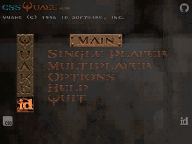
"This is an awesome achievement, but I can't help but notice that Quake ran smoother on my Pentium-133 PC in the 90s than it runs on my Mac M1 Pro..."
"This is the first thing I've seen on the intertubes for a /long/ time which genuinely makes me smile, thank you op.Checked out https://cssdoom.wtf/ and loved it too, both are far lighter than current affairs. \o/"
"Awesome! Harder to exit than vim."
"As others have pointed out, too many clicks per word. I am a sucker for a 'how many words do you know' quiz so I finished anyway. Overall I'm skeptical of the classifications. In broad strokes, the early words are easier and the latter words are more challenging, but the middle is pretty muddied.Some of the words chosen are rather absurd/inappropriate: breviary (which I got wrong but felt like a vaguely religious word) was characterized as intermediate but I think it's much more obscure and less obvious than that; Hippopotomonstrosesquippedaliophobia was used as a word (I got that wrong as well) - any type of 'phobia' word is really the sort of thing a fourth grader opens up a page in the dictionary and points out, not a word that is used... ever; metamorphosis and kinetic were labeled expert, which I don't agree with (what elementary schooler doesn't learn about the metamorphosis of a caterpillar into a butterfly? what high schooler doesn't learn about kinetic energy?).Most words were reasonably well defined in a way that most people would understand or recognize. A few words had poor definitions: lethargy ("the state of being lethargic" - obvious); complacent ("smug satisfaction with oneself" - I disagree that complacency is intrinsically smug); magnanimous ("generous toward a rival" - I disagree that a rival must be involved); gauche ("socially awkward" - this is sort of close but the given definition completely misses the idea of being tactless).They call it scientific and give a hand-wavey formula, but they don't explain how words are stratified in the first place. If stratified sampling is a formally recognized method of doing this, it would be nice to have a link to a real reference. I think I know a lot of words, but I am skeptical of the estimate this app provided (north of 75k)."
"Interesting concept, but 100 words is really quite a lot to get through... It's tiresome trudging through the easy words at the start, and I never got to see the interesting words before getting bored.I've seen other systems like this calibrate far more quickly by assigning a sort of score and confidence behind the scenes. Confidence starts out low and increases over time - correct/incorrect answers rapidly adjust score at the beginning, then things settle down.In practice this means you get a sequence of increasingly uncommon words initially, until you get one wrong, then you drop back to something easier until you start getting things right again, and eventually circle around words at your level.Also - too many clicks per word. It's low stakes, just let me click the definition once and I'll live if I misclick (or add an undo button)."
"In addition to everything everyone else has said: their math is off by half (or 100%, depending on how you count), due to a structural error.(context: native English speaker, big reader, huge nerd, perfect SAT score)I got all 100 correct on the first try without looking anything up! Confusingly, that only resulted in a "SCIENTIFIC ESTIMATE" that I know 85,000/~170,000 words?Their "How is this calculated" page that appears at the end explains their error:> According to the Oxford English Dictionary (Second Edition), there are approximately 171,476 words in current use.> We use Stratified Sampling. Instead of testing random words, we divide the language into 5 distinct difficulty bands based on frequency of use:> 1. Core Basics ~3,000 words > 2. Intermediate ~7,000 words > 3. Advanced ~10,000 words > 4. Expert ~25,000 words > 5. The Obscure ~40,000+ words> If you answer 2 out of 3 'Intermediate' questions correctly, we estimate you know roughly 66% of the 7,000 words in that band.> Total Score = Σ (Accuracy in Band × Band Size)Their strata add up to 85000, not ~170k, making a perfect score still give a 50%.They're also using a pretty limited and perhaps non-difficulty-representative subset of the language.Cute, but wrong on many counts."
"While it is true that some saturated blue-green colors will never be reproducible with only 3 primary colors, the CIE 1931 chromaticity diagram used in TFA overemphasizes their importance, because human vision cannot distinguish many colors in that area of the diagram.In reality, the greatest defect of the sRGB color space, which is still too frequently the default color space, is that it is not able to reproduce many saturated orange/red/purple colors, which are very frequently encountered around us, e.g. in flowers, fruits and clothes.The missing orange-red-purple corner appears small in the diagram in comparison with the missing blue-green corner, but in reality humans perceive much more different colors in the orange/red/purple corner, so the relation between those areas would be opposite in a uniform color space.The Display P3 color space is much better than sRGB for reproducing orange/red/purple colors and now it is available even in many cheap monitors. However many monitors that can reproduce Display P3 come configured by default to use just sRGB. Such monitors should always be reconfigured to use Display P3.Monitors that can reproduce an even greater part of the Rec. 2020 color space are obviously better than those that can do only Display P3, but such monitors with a higher color gamut are usually more expensive. The full Rec. 2020 color space can be reproduced only with laser projectors, because it uses monochromatic primary colors."
"I took up acrylics painting a few years back and I've been surprised by how much is lost in photos and videos. The two colors with which I've noticed this the most are ultramarine blue and prussian blue. I don't think it's just the color though, part of it comes down to how light is reflected off the painting and where you're standing, as well as the texture and the brush strokes. I have a few paintings hanging in my room and occasionally I'll look at them for a while and it'll reveal a new perspective to me that I had previously missed, despite being the one who made it.This post is making me feel a bit inspired to go outside and immerse myself in the forest to take in the greens. Thanks for sharing."
"What I missed in the article: the curves of the three “cone kinds” overlap. What if you could stimulate kinds of cones individually to see entirely new colors? Some people shoot layers at them into eyes. But you can also try this website: https://dynomight.net/colors/ (previously on HN but search fails me)."
"Many moons ago, I emailed Mr. Prince, and he replied!> What is the sound card the DOOM sound track was composed on? It sounds different on each one. So we wanna know, how was it "meant" to sound like :DIt was a Sound Blaster 1.0, which first came out in 1989. Creative Labs released almost a version of that card each year, but so many people had bought the 1.0 that the bulk of gamers had that model for several years. And the newer Sound Blasters used the same music synthesizer chip (Yamaha OPL 2 -- an FM type synth chip). A big plus of the Sound Blaster was that Sequencer Plus (MIDI sequencing software) supported making my own sound libraries, and I was able to tweak or "invent" sounds within the limitations of the synth chip. Some time later, I "translated" the sequencer files into General MIDI (GM) files, using the sound set of the GM file spec. Generally, they worked ok, but some of the original FM synth sounds could not be emulated.As sound cards got fancier, they didn't use the OPL2 FM synth chip, but emulated it. What they didn't figure in all this was that you could bastardize the sound of an FM instrument by playing it well out of normal music range, and you'd end up with a usable percussive instrument sound. I had done just that to create my own drum sets for the OPL2. When those sounds were emulated by the fancier sound cards, they actually sounded a musical tone rather than the bastardized sound. So my snare drum would sound like two little tin drums being played (I used two adjacent musical notes as left and right drum sticks.As for emulation of the OPL2 FM synth chip, I don't think you can get much better than the synth in DOSBOX (http://www.dosbox.com/).As for the real thing, you will be able to get the sounds as they were "meant" to be on any sound card that has the OPL2 FM synth chip.I hope this answers your question.Best regards,Bobby"
"RIP Legend.Neat that just last month the Library of Congress added the Doom soundtrack to its registry toohttps://newsroom.loc.gov/news/national-recording-registry-in..."
"Loss of an absolute legend.One of my favorite videos (and songs) sang by Bobby: https://www.youtube.com/watch?v=9w3yoIOK-9U (Eat Your Vegetables)RIP. You will be missed Bobby."
"A similar thing is happening to me. I worked on something for 3 years which I give away for free to help people and a thief took my software, ran it through ai to rebrand everything and relaunched as their own app. Unfortunately the ai missed a few Easter eggs I had hidden so the theft is undeniable. Google and Apple are useless for dmca unless you have a court order. They refuse to look at or arbitrate. So now I'm on to fighting this in court on principal which is going to be expensive.Theft is only going to become worse. It's already so easy and it's going to become even easier. We aren't prepared for what's ahead."
"This is exactly what DMCA takedowns are actually for."
"AI laundering is going to become a major tactic in all domains. Fiction and nonfiction writing, software, video, music, you name it.It's easy to take GPL software and rewrite it in another language without the license. Trivially easy. It's possible you'll even be able to do the same with just compiled bytecode soon.Just recently there was an instance where Nous Research Hermes agent cloned some Chinese OSS. It's happening much more broadly than this, though.This might warrant special attention unless we want to live in a world without copyright. Though that's also one additional possible outcome."
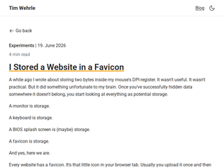
"Instead of going via pixels, why not use a SVG favicon and directly store markup inside it and extract it?Use this favicon.svg: <svg xmlns="http://www.w3.org/2000/svg"> <circle cx="50%" cy="50%" r="50%" fill="orange"/> <p>hello HN!</p> </svg> use this in your <head> to use a svg favicon: <link id="favicon" rel="icon" href="favicon.svg" type="image/svg+xml"> finally, use this in your <body> to extract it and add it to your document body: <script> fetch(favicon.href).then(r => r.text()).then(t => document.body.innerHTML += t.match(/<p[\s\S]*p>/)[0]); </script>"
"You can use the favicon cache as storage too, by redirecting users across domains. It's been proposed as a potential fingerprinting risk[0], and if a browser naively reuses the cache for incognito mode, it could be used to track users across browser profiles.[0]: https://www.schneier.com/blog/archives/2021/02/browser-track..."
"> You still need a tiny bootstrap loader to decode the image.Nope, you can do it all in a single file with an html/png polyglot (and nowadays you can get better compression ratios with newer formats like webp).https://web.archive.org/web/20120801001616/http://daeken.com..."
"In Russia, they claimed that new measures to block websites are necessary to protect the children online. Of course, they immediately used these new capabilities to block opposition websites and sources critical of the government.Now, seeing many European governments tirelessly push for these new measures to protect the children, I'm pretty sure that the children are finally going to be safe online."
"> the main thing that we've done is we've commissioned additional research on this because I've not been happy with the evidence.Ah, yes, the existing research doesn't agree with our biases, so let's fund new "research" that does."
"I've been using a VPN in the UK on my laptop and phone exclusively for 20 years, and the state has been working with ISPs to make "connection records" for most of that time.On mobile a VPN isn't always effective in avoid geoblocks. Some apps are able to determine I'm in the UK and still ask for ID - reddit is one for example, if you stumble on to an adult subreddit. Using the web interface avoids this.The UK has also moved to force ISPs to block certain bittorrent search engines.The UK is not shy when it comes to invading your privacy or censoring the Internet."
"JAWBONE == Justice Against Weaponized Bureaucratic Overreach to Networked Expression. Max Kudos. Ron and Ted owe a staffer (or staffers) a few drinks."
"Do people not read the article, or do they just read the clickbait title and comment?Apparently they missed Ron Wyden (co-sponsor) of the bill is a Democrat and the bill is a bi-partisan effort?Or the fact the EFF is actually in support of the bill:EFF applauds Senators Cruz and Wyden for taking this critical issue seriously, and we look forward to working with Congress on this bipartisan bill as it moves through the process. We hope it lands on the right balance to provide additional protections for everyday users around freedom of expression. "
"I am conflicted. On the one hand getting governments to wade into what is fair speech is absolutely a slippery slope. Yet, platform firms are not correctly incenvitived arbiters of speech either.Square this circle:1) Big Social Media firms have to make decisions on speech.2) The ideals of free speech that everyone espouses are from an era where publishing and control of publishing was nascent.3) As businesses, it is their job to ensure they take care of their shareholders, and thus this means driving engagement.4) As humans, we respond and engage with certain stimului more actively than others.5) As of 2026, moderation is still value driven. Private entities must now what is fair speech and moderate according to their values.6) Platforms, following the incentives that are set out for them, create environments that are as addictive as possible for its users. This is what their job is.You can make small enclaves for long form content. However, the majority of the voting population is drugged to the gills with enrapturing content.This is not a recipie for a healthy information economy, this is the opium wars being waged by our own business structures on our own people - a druggie information economy.Giving governments more power is ... oof... a bad idea. We need more genuine efforts to ensure a healthier content environment that works for society.Do note, that while US based commenters are concerned, the situation is even worse in other nations, given that Authoritarianism is on an upswing. Figuring this out is not a trivial philosophical issue."
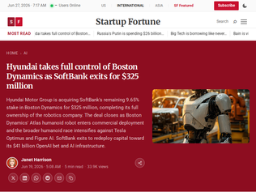
"Back in December 2020, Hyundai purchased an 80% controlling interest in Boston Dynamics from SoftBank for $880 million, part of a transaction that valued the robotics company at $1.1 billion. That agreement included a put option allowing SoftBank to sell its remaining stake to Hyundai at a later date.SoftBank has now exercised that option."
"I don't understand why they would implement humanoid robots instead of purpose-built robots. The human form is not the most optimal way to do most tasks, especially as it relates to manufacturing. Robots don't need to look like humans, they need to be useful. Seems like putting in an awful lot of extra unnecessary work to end up with a worse result."
"I don't think this is solely tied to car manufacturing automation. Even though Hyundai Motor Group is acquiring them, I would imagine they'd be well-positioned to commercialize general-purpose robotics and not just for car manufacturing, if Tesla is anything to go by.I do think this might be tied to South Korea's demographics, by 2040 the working-age population is projected to decline 25% from 2020 and keep declining almost linearly until leveling out around 17M around 2065, a 50% drop total in < 50 years. I would think HMG / Hyundai sees a huge business opportunity or this might be a national-level political priority but I don't know the specifics."
"> Pupils from first through seventh grade, aged 6 to 13, should as a general rule not be using AI, while those in lower secondary school, aged 14 to 16, can cautiously adopt tools under teachers' supervision, the government said.Sounds right to me. Kids under 13 need to learn to read, write and comprehend text. Generative AI is not going to help them with those skills.They can play with AI at home, and after 13 they can learn how to use AI productively and, ideally, in a way that enhances rather than detracts from their education.Also from the story:> Facing a broad decline in education test scores, the government in 2024 banned smartphones from schools and has given teachers back more powers to enforce discipline in the classroom.A big hooray for that. Will be interesting to see what impact that has on Norway education - a quick search just now didn't turn up any detailed studies, presumably those will show up eventually."
"Spend a few minutes on the teacher subreddits: /r/teachers and /r/professors, specifically. AI has been a disaster for student outcomes and educator performance, more or less across the board. It should be banned in education, but there's no way to enforce that without increasing educator workload substantially (eliminating homework and re-working lesson plans around that; moving tests and projects back into the classroom; etc.)"
"I think this is basically right. You don’t hand out calculators before kids understand arithmetic. LLM version is sneakier because skipping the work still produces something that looks finished."
"I appreciate the hard work that went into the things that did make it into Valhalla eventually, but:> The model was powerful, but also mentally heavyNo it isn't! it is this interpretation that kills off the null-safety debate entirely. Saying you have a variable that cannot be null is not a mentally taxing distinction, especially since everything is labelled thoroughly.> The team, faithful to the lesson “simplify the model for the user, even at the cost of the performance ceiling,” ultimately dismantled this dualism.but it would have simplified it for the user.The whole attitude and process around this and the other topics gives me very little faith that Java can be steered in a sensible direction here. The type system of a programming language is supposed to give convenient guarantees to the developer on a CPU that can only do numbers. There is no reason to reduce the optional(!) safety guarantees you can offer with the excuse of "too mentally taxing".Hell, they even get there half way by recognising:> the language model and the JVM model don’t have to overlap one hundred percent"
"> But the difference in memory is fundamental. The JVM can now store the values themselves in the array, laid out densely one after another: 8 bytes per point (plus a possible null flag), in a contiguous block. No headers per element. No pointers. No jumping around the heap.How much was this article proof-read? Didn't they just get finished talking about how heap flattening won't work for objects with > 64-bit representations? Their `Point` is at least 65 bits (two 32-bit ints plus the null flag). The "plus a possible null flag" and oddly short following statements seem to suggest this was some AI that got sidetracked by trying to make emphatic statements... oh and also the "[IMAGE: the same Point[] array in two variants..." block halfway down the page is unfortunate."
"After reading a lot of comments in here, there is one thing that always repeats itself in Java/JVM-related comment sections on HN. There are a surprising number of people who have an idea of what the JVM or Java used to be and have very little idea of what it is today. It is a very fit predator in 2026. Does it have its warts? Yes, but the substrate is extremely good."
"Fun article, but it leaves out my favorite "almost ignore" feature in Git: `.gitattributes`.This file lets you specify that git should "ignore" the diff from certain files. For instance, Node projects have a `package-lock.json` that is pure noise from a Git standpoint (it's just massive amounts of diff specifying specific versions of libraries, and the real human-readable version is in a separate `package.json` file).With `.gitattributes` in the root of your project, you can just add a line:`package-lock.json -diff`Now, that file will still get staged/committed (which you want) ... but when you `git diff` you won't see the massive amounts of pointless diff in that file."
"The global/user wide exclude is a feature that should be more widely known. I frequently have people submitting changes to add their IDE/OS/AI/... files to every project's .gitignore. They are almost always pleasantly surprised when I tell them that they can add them to their standard configuration and have them ignored everywhere without bothering every project and without risk of accidentally committing them on a project where they haven't updated the .gitignore yet.My general rule is that in-repo .gitignore should only be used for repo-specific things (build outputs, dependency folders, ...) and most user tools should be in their own user config."
"I have a habit of writing myself notes in various .txt files, and then not cleaning them up often enough so they end up cluttering my `git status` view. I ended up with a solution not mentioned in the article: create a `scratch` directory, and a `scratch/.gitignore` file containing just one line: `*`. This makes Git ignore everything in the scratch directory, including that same .gitignore file — so I never accidentally check it into Git, and don't end up pushing my personal .gitignore settings onto my coworkers.Of course, I could have used .git/info/exclude for that, and not risked accidentally adding my `scratch` directory with `git add -A` or something. So I (re-)learned something (which I'd known about but forgotten) today.But as a reminder to anyone else who had forgotten this: .gitignore files are processed throughout the repo, not just at the top level. You can sprinkle them throughout the repo structure for finer-grained control, which may come in handy in some circumstances."
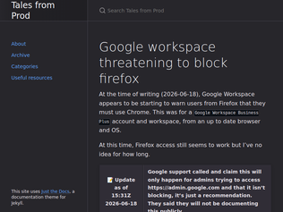
"This is not a Google-wide thing… this is from Google’s Context-Aware Access product, which is configurable in Google Workspace environments. OP should direct their ire at their corporate IT or infosec team."
"Is it not:https://knowledge.workspace.google.com/admin/security/create...The Org admin can put all sorts of restrictions on who can do what based on the client device setup."
"Hi folks, blog author here.Few comments based on common threads- No we don't have, or use, IAP and haven't configured it- Yes I'm the admin so can confirm this- "Context aware access" is only available on enterprise, we're just on "Workspace business plus"Happy to answer any other questions"
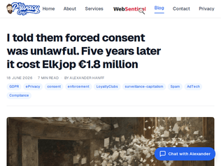
"I'm glad it all worked out for this individual. I hope more people live their lives like this as the dystopia progresses.Unfortunately, especially in the US, exercising your rights, or even just reading every paper you're expected to put your name to, not only constantly pisses people off for some reason, but also puts you at a significant disadvantage compared to the people that never push back in the interest of not making waves, or even because "whatever it's fine.""
"Actual decision (Norwegian): https://www.datatilsynet.no/contentassets/c8d0551d2a64403285...Machine translation of overview & 5.1 which is what the blog post is about (covers some other things as well): https://chatgpt.com/share/6a34732c-0fa4-83e8-aae1-95c25dd117...[EDIT] Oh, there was actually official English decision available as well: https://www.datatilsynet.no/contentassets/59addbef9c1b48a28f..."
"> The reply I received a few days later did me the favour of putting the violation on the record. Their position, in their own words, was that "in order to receive marketing / offers, it is a condition to be a member of the customer club." That one sentence is the whole case. They had taken a right I am entitled to exercise for free and turned it into the price of admission.I don’t understand… it would be one thing if it said “receiving marketing/offers is a condition of being a member of the customer club” but that’s not what is being stated above… rather that being a member of the club is required to receive marketing — perhaps something has been misworded or lost in translation?"
"1. No way in heaven or earth I'm using my real name with this.2. Alfred E. Neuman < https://www.intheweights.com/p/alfred-e~2e~-neuman > is either "Mad magazine mascot" (11 responses), or "German-American writer, novelist, and playwright" (1 response, from Llama 3.2 1B, classed as a hallucination). Maybe the odd one out means the German writer Alfred Neumann? < https://en.wikipedia.org/wiki/Alfred_Neumann_(writer) >3. Tamamo-no-Mae < https://www.intheweights.com/p/tamamo~2d~no~2d~mae > is either a "Caster-class Servant in Type-Moon's Fate franchise, based on the mythological fox spirit" (3 responses), or the "Legendary nine-tailed fox spirit" (12 responses, the vast majority, but all classed as hallucinations)!4. Thank goodness for Firefox's "mute tab" toggle; the thumping and keyclick sounds get real old, real fast."
"6 Football (soccer) players share my name and I still am at the top. Type "SEO" and I'll DM you my one little weird trick. /jkFun story about my name [0], the bank couldn't mail me my debit card because the mailman kept crossing my address off the envelop.[0]: https://idiallo.com/blog/sharing-a-name"
"Yeah, that went about as well as I would have expected.It dug up a bunch of what can only be my information, then made up a bunch of confidently wrong things to say about me.I'm a Software Engineer and SaaS guy, known for running the company "[random word from my blog] Software" and his [different word from my blog] Blog. Founder of three separate startups I've never heard of and may not exist, and well known contributor to Open Source (because that's something that software people often do, so it makes for pretty words to put into a paragraph, despite me not contributing to open source).Overall, it's like watching a really bad sight reader doing his act. It suggests something that's likely true about you given your background, then keeps tweaking those suggestions until you go "yeah, that's it! you nailed me!".Sadly, this is pretty par for the course watching AI try to do stuff."
"The section on dynamic compilers is more or less all about trace compilation. Generally, trace compilation is a dead end and has been abandoned repeatedly. The more important concepts here are type feedback and speculation and deoptimization, as well as making fast compilers and tiering.The course overall looks good, and it's great that so much is available online, so well done, Adrian."
"Previously...CS 6120: Advanced Compilers: The Self-Guided Online Course - https://news.ycombinator.com/item?id=39577878 - March 2024 (102 comments)Advanced Compilers: Self-Guided Online Course - https://news.ycombinator.com/item?id=35130975 - March 2023 (82 comments)Advanced Compilers: Self-Guided Online Course - https://news.ycombinator.com/item?id=25386756 - Dec 2020 (232 comments)"
"I'm a bit confused about what makes this course "advanced." Most of the topics (dead code elimination, data flow, dominator analysis, SSA form) seem like they belong in a first course on compilers."
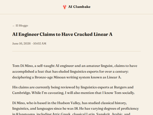
"As an amateur who's been fascinated by this puzzle himself, I will add some context that might be relevant in assessing the plausibility of this claim:- The "Libation Formula", which the author used as the base for his translations, is the most studied piece of writing in Linear A, because it's the only recurring phrase (with grammatical variation) that we have. The corpus is extremely fragmentary, with just a handful of instances of longer text (and even then, the texts are the length of an average sentence in English). The majority of documents available to us are lists (of inventory, personnel, offerings or something of this sort). The longer texts make use of punctuation marks, likely put in between words. This gives us a non-trivial vocabulary, which still does not match that of any known language.- With such fragmentary remaining material, we cannot be sure that a) all the texts we call "Linear A" are written in the same language, and b) the recognizable words are not abbreviations, for example.- The author made an assumption that Linear A symbols which have counterparts in Linear B should have the same phonetic values. This gives us an already known glyph that represented "NA". "Duplicate" glyphs are only found in the P-series, and are assumed to represent syllables which were distinguished by the Linear A language, but not by Greek - such as aspirated/unaspirated P. There is a glyph that stands for "NWA" in Linear B, but instances of it have been found in Linear A as well.- There are countless words with no known etymology in Ancient Greek, assumed to originate from a substrate language or languages spoken in the area at the time Greeks migrated to their present-day homeland. The language of Linear A would be a likely candidate for such substrate. If Linear A were a Semitic language, then we should already be able to establish Semitic etymologies for those words as they were in Greek. Of course it could also be the case that these words came from an another language which did not adopt writing or its writing did not survive to our times."
"A lot of loonies make this claim, but Tom's work is credible enough that it's being reviewed by linguistics experts at Rutgers and Cambridge. Additional validation: his approach produces results. He's translated over 300 words, and that's never been done before, and his solution actually solves some problems in Linear B. Tom is an AI engineer, and Claude Code was key to his work. Disclosures: I know Tom socially, and I wrote the post at the link."
"The reason linear A is so difficult is that the total remaining corpus of Linear A text is ~7500 characters, spread out over ~1500 inscriptions.If you have a 4k screen, you can fit all remaining Linear A text on your screen at once, in 14pt high font."
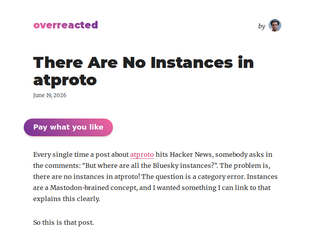
"> Every single time a post about atproto hits Hacker News, somebody asks in the comments: “But where are all the Bluesky instances?”. The problem is, there are no instances in atproto! The question is a category error. Instances are a Mastodon-brained concept, and I wanted something I can link to that explains this clearly.I feel like you've (perhaps purposefully?) misinterpreted "instances" just to plug ATProto specifically at the expense of ActivityPub (and RSS, a bit). I think you lower yourself by doing this:1. it forces you to omit and contort the interesting technical truths about ATProto and Activitypub, like Relays and their pros/cons for ATProto and account migrations and pros/cons for ActivityPub2. it creates unnecessary conflict and criticism and seems unnecessarily divisive for 2 platforms solving problems in such a similar spaceIt's also just seems a bit silly: why would you assume that when someone asks "where are the instances?" they're not using the common mainstream use of the word "instances", like, servers, or running software, or VMs, or containers?Sorry if this is overly harsh or I've misunderstood, but it gives me a strong vibe that it was motivated by disdain and frustration towards ActivityPub and ActivityPub users rather than wanting to legitimately inform the world about ActivityPub.I did enjoy the diagrams and the explainers though! I just felt like the subtle digs and pops at activitypub were an unnecessary distraction."
"I think the analogy presented here is broken. RSS doesn't depend on Google Reader at all. Even at its prime, RSS depended less on Google Reader than email depends on Gmail now. In ATProto, AppViews heavily depends on Relays to be useful, and Relays are quite expensive to run. Also, the yellow circles which represent blogs in the RSS illustration are really not of the same nature as the same circles which represent posts on Facebook. Blogs are self-sufficient, for example.I'm not saying ATProto is bad at all, but I feel like this blog post adds more confusion than it clarifies anything."
"As far as I can tell, Relays[1] are the glue that makes ATProto work performantly. I think they're supposed to be content-agnostic — they just shuttle data through, reducing the number of services each AppView needs to be aware of.As the blog mentions, the big improvement vs Mastodon is that Relays, AppViews and PDSes are separate services with their own distinct scaling demands. It's a rather beautiful solution to a system design problem.[1] https://atproto.com/guides/glossary"
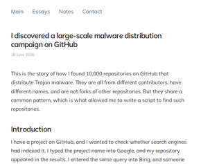
"> Why do they only clone new repositories, rather than popular ones? > Why do they delete a commit and push a new one every few hours?Because this is not targetted to humans. It's targetted to agents. They just need to appear on a fraction of the searches agents do to add dependencies and get lucky a couple times to start a new infection cluster.Then to the more interesting question: why now?1. Agents, agents everywhere.2. MAJOR elections happening this year in the World, including US midterms and Brazilian mains. This appears to be an account-stealer worm - and my guess is it's looking to all those sweet sweet Facebook/Instagram/Tiktok/Whatsapp accounts ready to bot their way into oblivion."
"This is happening to me as well. I have a few moderately popular open source projects and I have found my name attached to new projects that I have nothing to do with or they are derivatives of my projects with redirection to unknown sites.Legitimate projects:https://github.com/jimmc414/onefilellmhttps://github.com/jimmc414/Kosmoshttps://github.com/jimmc414/cctraceProjects using my name which I have no affiliation with or they are projects I have written that they have injected new URLs into:https://hub.decision.ai/skills/jimmc414/benchling-integratio...https://lobehub.com/skills/jimmc414-claude-code-plugin-marke...https://mcpmarket.com/tools/skills/geniml-genomic-machine-le...https://mcpmarket.com/tools/skills/biopython-for-molecular-b..."
"> Why do they delete a commit and push a new one every few hours?May be to make it appear on the top of the "Last Updated" repositories in case someone searches for the repo or a keyword. So instead of the author's actual repo, the users endup cloning the trojan infected one."
"This still has to pass with the people in a referendum.The discourse on nuclear is still quite chaotic in politics in Switzerland. All left leaning parties and greens parties are strongly against nuclear. I am not expecting informed and civil discussions about this topic.Switzerland has a summer/winter energy problem. We have lots of potential of producing energy in the spring and summer (when our dams are full from the melting of snow and the sun is shining), and much less so in the winter. We can still improve 10 to 20% our hydro production, but that's it. All the water sheds are already well used and rely on our glaciers to replenish, which will become less predictable with climate change.We shouldn't completely closing the doors to all forms of nuclear technology. Obviously, we can't build blindy without any considerations. But we may need it on the second half of the century, especially if we are going to electrify all forms of transport. We can't be buying France's nuclear energy all the time."
"Two things to keep in mind when thinking about nuclear1) Has the lowest deaths/TWH: https://ourworldindata.org/grapher/death-rates-from-energy-p...2) Any country that is not US absolutely needs to invest in nuclear technology. This is for your own security. In addition to providing energy security, it also provides physical security (with a bit more work).Without nuclear, your country will remain vulnerable to:1) Direct attacks2) Sanctions which destroy your economy and quality of life of your citizens3) Fossil fuel disruptions, either intentional or maliciousWith nuclear + solar, you have an unbeatable combination of all forms of security. Every country wastes lots and lots of money on many useless initiatives. Nuclear might seem costly, but security is somewhat important.The rest of the world on clean energy will ultimately help people in US, because there will be less foreign adventures and oil will be a lot cheaper when all that demand is destroyed, supply chains are not disrupted by these wars."
"This is going to be a huge waste of time and money until we realize that building new nuclear power plants will be too expensive and too late, since we'll have figured out a renewable energy concept that'll handle the load by then. Instead we could also just join a French project, who have way more experience.We should focus on extending our hydro power storage capacity instead.There will be a referendum anyways, so I think it's unlikely the ban will actually be lifted."
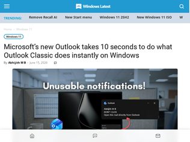
"Up until 2019, Windows was my daily driver and had been for the prior ~20. years. I had been regularly ssh-ing into Linux machines, but it didn't seem like a place I could live. Then, in 2019, I built a PC and, wanting to get more proficient in Linux environments, I made it a dual boot setup with a Ubuntu desktop partition and a Windows partition, expecting I'd inevitably get frustrated on the Linux partition by sidequests debugging driver issues or setting up peripherals, unproductive yak-shaving stuff. I had to google a setting or two over the first couple days, but other than that, everything just worked on the Linux partition. Things opened quickly, things installed easily, and things I was worried about (e.g. nvidia and printer drivers) were either automatic or a one-time step so small I don't remember it. After a couple weeks, I noticed there hadn't been a single moment where I had to switch to the Windows partition, and a month after that I reformatted the Windows partition ssd and added the storage to the Linux partition.If you have considered switching to Linux and worried that it would be a chore, give it a shot (if you have the freedom to choose). It has been polished and ready since at least 2019. I have to use a Windows machine for work and, like this New Outlook issue shows, MSFT has concluded most users can't or won't leave so there's no margin in improving UX and some margin in doing things that make UX much worse. I don't think I'll elect to have a personal Windows machine ever again in my life."
"> Outlook is based on WebView2, and like all web apps, it’s slowFastmail also has a web based email client, which is as fast as (if not faster than) Outlook Classic.The new Outlook is just bad. Load order is wrong, it renders everything on every window, loads unnecessary data, etc. Plain annoying."
"And to think that the "old" Outlook's splash screen is there for a reason: it used to take a while to open before SSDs became commonplace! Windows in general used to be usable on HDDs; SSDs would blow everyone's pants off making everything open instantly. These days we have 20+ Gbps SSDs without the AHCI latency tax and they're no longer enough to open an e-mail.THAT'S how low the ball has been dropped."
"For those not trying, this allows Deepseek to understand a picture (instead of just extracting text from it), and it can describe what's in the picture, but this is not an image generation system, so you can't ask it to modify an image.Personally, I'm a bit surprised the DS chat app still doesn't offer its own text to speech and speech to text features (I know DS doesn't have any ASR model for example, but there are quite a few in the open)."
"The product I want most is the ability to return to the late January 2026 version of Anthropic models."
"Points to https://chat.deepseek.com/sign_in for me, that's just a login screen. Anything page with some info?"
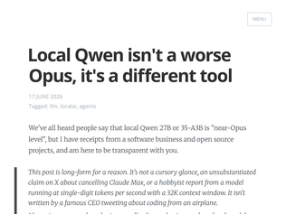
"If you play with these models long enough, you realize there is more to them than just "model X is smarter than model Y" or "model Y is cheaper than model Z". They are different tools and the prompting technique is different. It is very much like playing an instrument.With Claude, you sometimes want to under-specify or phrase things more indirectly to give a color to the implementation or elicit something creative. Also (you might raise an eyebrow at this) being nice to Claude will be rewarded and being mean to Claude will be punished. Claude tends to mirror your tone more aggressively and you don't want to get into negative loops with it.With GPT, you have to be precise and reduce ambiguity. GPT will often try to resolve ambiguity in a min-max style "I'm going to do X, but make sure it is not quite Y". It will tend to be more paranoid and overengineer to catch all edge cases if you don't tell it precisely what the scope is.With Qwen, you have to give it a shape and let it fill it in. Qwen likes XML, JSON and lists. Qwen likes to be shown a bunch of examples of previous work.This is not scientific at all, just vibes, YMMV."
"I feel like it's the Emperor's new clothes reading this article and seeing the praise it's getting. This sentence doesn't even make sense:> These products use very low level Linux primitives like containers, Kubernetes, Firecracker microVMs, and networked protocols.Out of anything that is a "low level linux primitive" I could maybe argue that networking? protocols fit the bill.And it's obviously fully AI-generated! Which I wouldn't even care about if I could actually trust the content, which I can't!"
"That's a great write up.The one thing I feel it seems to under estimate is the likelihood of improvement. Even the authors acknowledge it's not even worth comparing local models from a year ago to what we have now. In fact, people widely see Opus 4.5 in November last year - 8 months ago - as the first time agentic coding became viable broadly viable even with frontier hosted models.So why would we lock in hard on any concept at this point of what a local model is and isn't good for? Whatever it is right now, it probably won't be that in a year. It might be naive optimism to think we'll ever get to long horizon tasks with models that run on consumer / pro grade hardware. But so far the naive optimists are winning."
""Is anyone still using emacs?"Yes, 34 years and no plans to switch.Emacs cursor movement keystrokes are quite widely supported elsewhere too which use GNU readline or implement at least subset themselves.Those work well also besides shells with Chromium/Chrome/Safari etc. many browsers input fields (address bar and text area). Cisco IOS, Juniper Junos, Netscreen load balancers too etc. IMHO makes jumping around CLI much much convenient and faster than moving hand to reach cursor keys.My only gripe is that Firefox and its derivatives it doesn't work any more. Long time ago it did work. And I have no idea why feature was dropped some rewrite.e: s/deadline/readline/g"
""Is anyone still using emacs?"Yes. I had to briefly visit the world of VSCode during a period of time when it had better AI integration than emacs did, but since I got Claude working well inside of emacs I've returned to 100% emacs. There just isn't anything like the old editors, built in the 80x24 terminal era, for getting huge swathes of code on your screen at once. I run a standard widescreen monitor with three vertical windows for emacs, each of which I often will break into two frames, so I can have up to six contexts active at once. I rarely do, but I frequently have 2 and 3. That's my entire 4K screen, full of code, usefully full of code. I'm not an IDE hater but they do put an awful lot of stuff on the screen that on a proportional basis I'm just not using as much as I use the code editor.I had been getting somewhat nervous about emacs' long term prospects about 10 years ago. I would read the release notes for major versions and generally not be particularly excited about anything. Somewhere around treesitter something seems to have revitalized the project. It may well have been treesitter that revitalized it overall. You end up with a lot more wood behind fewer arrows when the project is able to put more work into generally-useful tools rather than every single language community maintaining their own separate mode for each language.Now I am more excited about the major releases; for instance term issues are an issue for me with the aforementioned Claude integration. Not enough to stop me, but annoying. At the risk of saying something inflammatory to emacs fans, I feel like emacs is catching up to everything else better now... but it is catching up. It's getting easier to recommend it again as something you may want to seriously consider as a power-tool editor and not just something I used because I had 15 years of finger-experience with it and no significant reason to change. AI has eaten a lot of the IDE tools for me and you can type into a text box in emacs as well as you can anything else.I still occasionally bring up VSCode now to use the debugger, I still don't feel like I have as nice an experience with that as I do with emacs, but my debugging habits have always been able to deal with doing something a little extra to do a debugging session. By its very nature, you're committing some time to the process just to do the debugging itself, no matter how slick the UI for it may be, so a bit of overhead isn't so bad."
"This stuff all looks great, I can't wait to upgrade to 31 and then forget about all of it and just keep using Emacs the same way I have been for the past 20 years, /again/"
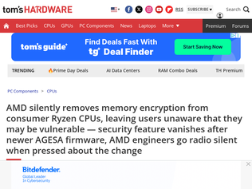
"This was never marketed as a feature of the consumer CPUs and if some malignant actor does get physical access to my (consumer) hardware, then them being able to read out bytes through cryo-freezing the RAM really isn't high up on the list of things I'm going to worry about."
"From yesterday: "Users cry foul after AMD stripped memory crypto from its consumer CPUs", https://arstechnica.com/security/2026/06/users-cry-foul-afte... ( https://news.ycombinator.com/item?id=48559827 )"
"It's pretty crazy that we have this entire segment of features that companies artificially restrict from the average person and overinflate the price of, for no real reason. GPU virtualization is another example of such a feature.The market segmentation arguments don't really work either, enterprises are paying the big bucks for more than just these standalone features."
"Fun story:I built BetaList 16 years ago which was one of the first "product discovery" platforms. Years before Product Hunt, etc.I manually reviewed every submission and unfortunately often I had to tell founders that their startup didn't qualify to be included. Almost everyone would (understandably!) argue their case, but as volume increased I couldn't afford to go into a deep argument with every single founder.That's when I made https://submit.co a site similar to OP's. The idea being that instead of say "No, we will not feature your startup" I now gave them an alternative place to put their energy.Initially it was mostly a list of tech blogs, but as more product discovery platforms popped up, I started adding them too. In a sense, I was promoting my competition but it was exactly the startups we couldn't list any way for one reason or another.Eventually that list of "places to submit your startup" got so popular (and copied everywhere ) that it started driving traffic back to BetaList. (I included it at the very top of the list)."
"I have been maintaining my own metalist of directories where one can submit their indie/personal websites to. In alphabetical order, here is what it looks like right now:https://blogroll.org/https://blogs.hn/ (by @surprisetalk)https://hnpwd.github.io/ (I am one of the maintainers)https://iii.social/ (by @freshman_dev)https://indieblog.page/ (by @splitbrain)https://kagi.com/smallweb/ (by @freediver)https://marginalia-search.com/ (by @marginalia_nu)https://minifeed.net/ (by @freetonik)https://susam.net/wander/ (I developed this)https://text.blogosphere.app/ (by @ramkarthikk)https://wiby.me/A clarification: The Wander link above (which I developed) is not something where you list your website. It is a tool you host on your website to become part of a decentralised network of personal websites (much like in a webring, except that the network is shaped like a graph rather than a ring): https://susam.codeberg.page/wcn/. More details here: https://codeberg.org/susam/wander"
"What’s old is new again. In the 90s we used services like Submit It to get an URL into all the crawlers and indices. Now the search engines aren’t the challenge, it’s the sites targeting specific audiences."
"It is now significantly harder to figure out who understands the systems and is using AI effectively and who doesn't know shit and is just slinging LLM copypasta around. Before 2025, the underperformers/coasters were at least relatively identifiable by the paucity of their contributions. Now all of the sudden every single engineer is filing PRs, code reviews, technical design documents, and every other artifact under the sun with perfect formatting and at least superficial plausibility. This is mostly due to incredible pressure from the C-level for every engineer to be using as much AI as possible, but it's also just a game theory respopnse because it's in every engineer's best interest to be as prolific as possible.We are absolutely drowning in documentation and code that seems legit and the only recourse is to lean on AI to help process the sheer quantity of it. I have a feeling that the fallout from this phase of the industry is going to be an exotic form of technical debt that is remarkable mostly in its enormity."
"> Those are not code problems. They are evaluation problems.> Code becomes precious when it is the only place knowledge lives.Reading AI code all day is _agonizing_. Just, a horrible way to live, and it melts people's brains at the moment you need them to be the most capable.Manual programming has this really productive and gratifying feedback loop, where you read the code, write the code, and fix it until it compiles/runs/does what you want. AI code not only does half that for you, but it makes the "click" at the end uninspiring because you're never sure if it's cheated a bit to get to that moment.Trying to operate with AI-generated code as the only durable artifact of programming is a dead end for the industry. Charity points to (and correct discards) architecture diagrams/specs as an interesting space to work in. My suspicion is that it's closer to the thing that's hand-written: prompts, markdown plans, and other nudges. Focus on the thing that you, as a human, produce, and that's the basis for both the core loop of "did the AI follow my instructions" and it's higher-leverage when you go to code review.By the time you get to the PR, you've probably typed enough to Claude that you can regenerate the code, but the current industry default is to just throw away all those sessions and ship the code. That's backwards!"
"I liked this article, and I see a lot of other commenters didn't, so I'll give my take:When starting on a new codebase, how do you make yourself into a helpful contributor as quickly as possible? I go straight for the humans and their human docs. What problem was the system originally built to solve? What was the original design, and what were its biggest problems? Who is currently using it? If you know these, reading the code is much easier because you can guess why things were done the way they are.Also, this blog post has gotten popular: https://blog.gpkb.org/posts/just-send-me-the-prompt/I think Charity is observing a very old problem and expecting the new technology to lead to a new solution of some kind. I doubt she thinks even the current generation of tools are the end of the AI software development story. She's not saying we'll drop design docs right into Claude code and walk away (design docs aren't complete either, that's why when you're ramping up you also have to talk to people, read old tickets and postmortems, etc.)What she's observing is that, in prod, people don't like infra where it's hard to tell how it got into is current state, and so infra-as-code is what we do now. She's also observing that, "it's hard to tell how it got into its current state" is the status quo with codebases, which other people have observed going back to "Programming as Theory Building" and earlier. And she's expecting that, analogous to infra, software development will somehow be done with tools focused on making "how the code got into its current state" clearer."
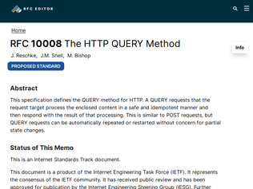
"Including a strong motivating example might have helped sell this, using an example that could trivially be expressed as a GET is extremely distracting.Even imagining a QUERY with a large JSON filtering structure, or say an image input as request body, it feels extremely odd to include the request body as part of the cache key. It also implies an unbounded and user-controlled cache key, with the only really meaningful general caching strategy being bitwise compare of the request body (or a hash), which in a hostile scenario implies cache busting would be trivial.This invokes multiple semantic oddities in one go with obvious difficulties for a very niche use case. If I'm writing a service that needs complex filtering or complex input like an image, any form of caching (e.g. individual data columns of a join, or embeddings keyed by perceptual hashes of a decoded image input) is going to be far away from the HTTP layer and certainly unrelated to the exact bit representation of the request on the wire.Why even bother trying to capture this in a generic way?I would be far more inclined to try and capture this caching semantic as a new header for POST. Something like "Vary: request-body" or similar. Perfectly backwards compatible and perfectly ignorable for all but the 0.1% of CDN use cases where the behaviour might turn out useful"
"I wonder if HTML forms will add support for QUERY: <form action="..." method="query"> This would avoid the annoying re-submission warnings you're getting if you refresh a page that was returned by a POST form submission, since QUERY is required to be idempotent."
"Just in case anyone wants to pretend it's still that other century:https://www.rfc-editor.org/rfc/rfc10008.txt"
"For context, since a lot of people on HN haven't worked on games - this is not intended to compete with Git for general software development. This is a competitor with Perforce for game development.Git is fine for text based files like code, but it's really bad at stuff like textures, 3D models, audio files, and other non-text files that game developers need to collaborate on. For example, one artist might need to obtain an exclusive lock on some art assets while editing them, because there is no sane way to merge two artists' async edits.The SOTA in this area is Perforce (https://www.perforce.com/products/helix-core), a proprietary system. From what my gamedev friends tell me, when Perforce works it's great, but it hits enough snags that you need a tools engineer to manage it and occasionally fix issues manually. Git LFS is an alternative, but my gamedev friends all prefer Perforce especially when working on team projects beyond like 3-4 people."
"Just today as I pushed some changes to Github, I was thinking how user-unfriendly Git's UI is: Enumerating objects: 5, done. Counting objects: 100% (5/5), done. Delta compression using up to 10 threads Compressing objects: 100% (3/3), done. Writing objects: 100% (3/3), 290 bytes | 290.00 KiB/s, done. Total 3 (delta 2), reused 0 (delta 0), pack-reused 0 remote: Resolving deltas: 100% (2/2), completed with 2 local objects. I know all of these things communicate something to the die-hard Git user, but for most people (even most people using Git, I bet) this is just complete gobbledegook. What the hell is "delta compression"? Why do I care how many threads it's using? What is an 'object' and what does it mean when it's 'local'? What does 'pack-reused' mean?From the documentation, it looks like Lore does a bit better in this regard: Pushing 1 fragment(s) Pushed 1 fragment(s), 124.00 bytes Pushing a3f8c2d1... to branch main Pushed revision 1 -> a3f8c2d1... to branch main"
"This is a very promising announcement for Unreal game development specifically. For any other purpose I wouldn't care as much.Perforce definitely needs a challenger. It is not the incumbent because it is particularily simple to use or administer. Git is actually way simpler when it comes to branching operations for example.The reasons why p4 is often preferred in gamedev have already been mentioned in other comments: large project support, permissions, file locking and so on. Another key reason p4 is the king for Unreal dev is just how well it's supported inside the engine. Not perfect, but it's the best supported VCS because it's what Epic uses. Even the Git plugin is painfully unfinished, because Epic does not internally use it. So with Lore I expect them to give it first class support. I'd recommend Git a lot more if the support in Unreal was better.(background; I've been in gamedev for almost two decades now, 2-200 person companies, every kind of engine and version control system. I prefer git where I can use it: for Unreal that means small projects and/or tech savvy team members. Pick the tool that is right for the job and the team.)"
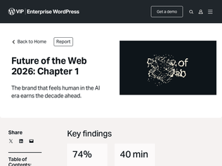
">No customer or user wakes up and says, ‘I hope I get to talk to a chat bot or an AI agent todayThis is so true. I led the implementation of an AI customer service agent and even though management thinks it’s a great success the metrics tell a totally different story. Our customers hated it. I haven’t seen anything in tech that is hated more.Before you think we did a bad job with our solution, I can tell you we went with some of the best and did our own intensive testing and worked on latencies etc., I actually thought the final version was pretty good but our customers just hated it."
"I could be wrong, but it feels like one issue is that AI seems to cater more as a signal to venture capital and the internals of the tech industry in a lot of these products, while consumers just want to know "what is this product going to actually do for me," and care less about whether it is implemented with the buzzword du jour."
"This is the problem with all of the recent “AI” crap that has been shoved into our devices.We have had ML features for years and it provided real benefits but most people did not know or care how it worked, it just did its job in the background without the underlying tech being shoved in your face.Everything AI though is the opposite, it wants to focus on the technology first and the benefits second. It is actively making a worse UI and often providing little to no benefit.Most consumers don’t actually care how their tech works, just that it does and gives them benefits."
"It seems to really be a nice step-up and is getting quite close to the frontier. I wish they'd start focusing on the reasoning efficiency now, though. I have a simple (relatively) test task to evaluate LLMs: writing a simple math evaluator library in Nim (it's about 400-600 lines total max), and GLM 5.2 (xhigh which maps to max effort) spent over 15 minutes (!) reasoning, spending about 45k tokens, before it finally wrote the first file.I know it's hard to improve on that, but now that their models are good enough at raw intelligence, I think this should become a higher priority task.Currently on https://artificialanalysis.ai/#output-tokens GPT 5.5 xhigh spends 16k tokens total on average, GPT 5.5 high is 10k, Fable 5 33k, Opus 4.8 41k, GLM 5.2 is 42k. GPT 5.5 is extremely reasoning efficient.Of course if you convert those values to actual request cost, GLM 5.2 will probably beat GPT 5.5/Opus 4.8, but speed matters for a lot of people, I think."
"I have a script that ranks these based on codingindex from Artificial Analysis.All it does is pull a json from their main table page and parses it with the fields I care about (coding).There used to be a mailing list associated with it but eh ... there wasn't much interest. I use the script every day though.Current partial output score age size name 47.1 58 large Kimi K2.6 47.5 54 large DeepSeek V4 Pro (Reasoning, Max Effort) 47.5 70 - Muse Spark 47.6 132 - Claude Opus 4.6 (Non-reasoning, High Effort) 47.8 205 - Claude Opus 4.5 (Reasoning) 48.1 132 - Claude Opus 4.6 (Adaptive Reasoning, Max Effort) 48.6 55 - GPT-5.5 (Non-reasoning) 48.7 188 - GPT-5.2 (xhigh) 50.1 29 - Qwen3.7 Max 50.7 1 large GLM-5.2 (max) 50.9 120 - Claude Sonnet 4.6 (Adaptive Reasoning, Max Effort) 51.5 92 - GPT-5.4 mini (xhigh) 52.1 55 - GPT-5.5 (low) 52.5 62 - Claude Opus 4.7 (Adaptive Reasoning, Max Effort) 53.1 132 - GPT-5.3 Codex (xhigh) 53.1 62 - Claude Opus 4.7 (Non-reasoning, High Effort) 55.5 118 - Gemini 3.1 Pro Preview 56.2 55 - GPT-5.5 (medium) 56.7 20 - Claude Opus 4.8 (Adaptive Reasoning, Max Effort) 57.2 104 - GPT-5.4 (xhigh) 58.5 55 - GPT-5.5 (high) 59.1 55 - GPT-5.5 (xhigh) 62 8 - Claude Fable 5 (Adaptive Reasoning, Max Effort, Opus 4.8 Fallback) To see everything, run it like so $ curl day50.dev/art-analysis.sh | bash The repo: https://github.com/day50-dev/aa-eval-emailsome key takeaways:* open models are on about a 4-7 month lag right now depending on how you want to measure it* if this keeps up, you might see an open-weights model doing claude fable 5 level work before the new year.if people sign up for the free mailing list (that just does this) I'll go and put it back on ... emails when new model evals drop - it was pretty useful."
"Why aren't more people talking about this? It's literally Opus 4.7 quality stupid prices. I know providers who are offering this at unlimited tokens for $50 a month. Some are even offering API rates at 3x lower than the official ZAI api rates which are already like 10x cheaper than Opus. (Crof and Umans btw)This is a huge blow to Anthropic/OpenAI/Google and a massive win for the rest of the world. The official API prices and speeds mean nothing for open source models."
"> whether there are black holes at a redshift of 10 or not is not a partisan issue.Anything that depends on a basic understanding of the scientific process, and resulting scientific facts is absolutely a partisan issue right now."
"Last year, the mood in my field, that has been relatively isolated from many of these impacts, was still very "these are uncomfortable times, but it's still possible to pull through".Recently, you can cut the tension in a room with a knife whenever matters relating to government decision making come up. Some coworkers are leaving science, promising phds and postdocs leaving to other countries, many of the more established scientists are maintaining backup options.I too have re-evaluated my feelings and decided that while I am not yet at the point of actively looking to leave the US, besides the hassle of moving itself, I would be fine with having to do so."
"> But arbitrary cancellations and delayed disbursements are unprecedented. And justifying them on the basis of politics—prohibiting, for instance, grants that include language referencing diversity, equity and inclusion (DEI)—was unheard of until now.It is odd how removal of DEI is framed as being political, when it is the other way round. DEI schemes were deeply political, and depended on who can claim to be the biggest victim."
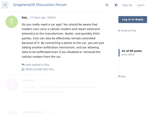
"It is amazing how Volkswagen keeps messing up. I am currently in the market for a new car, an EV specifically. Volkswagen brands were at the top of my list for many reasons, among them the excellent driving assist implementation.I got an offer from a dealer three weeks ago and was going to order the car, then the API for the community integration got turned off. I decided to hold back and see what comes from it. Now this, which ultimately - since I am a GrapheneOS user - makes me completely cancel my plans.I really do not understand VWs thinking here. It would cost them little to nothing to continue not blocking the the inofficial API and not block GrapheneOS (or other non Play Protect androids) users. It would have no adverse effects on the average Joe, but it would gain a lot of support and enthusiasm from heavy users, differentiating from other brands. Not to mention the fact that it is the USERS data in the first place"
"This is sadly not even the full extent of it. What they did is, they locked their api entirely for anything that is not play protect certified. That means, all the cool stuff that was doable via community-driven projects is now dead in the water.The "app" they provide is 60% advertisement, 30% features, and I unironically preferred using a Home Assistant connection instead of of it for everything. Even for automations like "when to preheat the car", since that was easier and more intuitive outside of their native function.This also means, that charge control from the cars side is not possible to automate anymore.Sure, one could take the position "but it was never officially promised", but for some people, including me, having the api (which is paid btw) was a selling point.Yes, I registered specifically for this comment."
"Driving a rental car in Germany almost makes me cheer for the ongoing bankruptcy of their auto industry. It really needs a full reset at this point. Sad thing is EU law mandates for a modem in the car as well as intrusive driving aids that actually make driving less safe by constantly driving your attention away from the road[1]. So there is no hope to get a minimally decent car in Europe in the near future, unless a wider reset also happens at the political and social level.[1] https://www.youtube.com/watch?v=f-S76WEl25k"
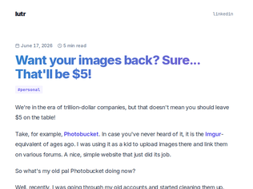
"I have received the email that my photobucket account is going to be deleted, so I've logged in after who knows how many years and got offered the same thing, to subscribe. Instead I've went to close the account and in the process (or somewhere else, don't remember exactly) there was an option to first download all the data which I've used and got the images back (there were just a few as I haven't used the service really), then I've closed the account. There was no need to subscribe."
"Why are we complaining about this as a corporate greed thing? (I do agree that it's bad that there were no images preserved and that component of the post is justifiable)Obviously Photobucket completely failed to properly monetize, and was sold to Fox and then offloaded to some no-name startup called Ontela (https://en.wikipedia.org/wiki/Photobucket). The service could have been shutdown completely and the harddrives fed into the shredder. Instead some former PE vulture did the math and figured out that preservation might make some money. You _can_ access old Photobucket images (when it works) that would otherwise get a median of 0 hits a month, while the rest of the internet succumbs to linkrot. Seems like a win-win for everyone involved."
"Considering they explicitly said they had some photos of yours ("You shared them. We protected them."), this seems like chargeback territory."
"Some initial thoughts as a practicing radiologist:- This looks really cool and I hope they keep innovating on this. I love seeing new modalities develop and despite my (many) reservations and criticisms, if even one good use case comes out of it that truly helps people, it's tech money well spent imo.- They show the reconstructed images as though they are a low resolution CT, and promise that quality will improve as they iterate. This is cool, but ultrasound is not CT. Ultrasound cannot image the lungs, as they are filled with air. You cannot find bone lesions, as the sound waves do not penetrate the cortex. You cannot image many structures in the abdomen if they are surrounded by gas-filled bowel. The brain is encased in bone, so you might get some penetration but it will be very limited. Even with theoretically perfect AI reconstruction, these scans will not be true "full body" in that there will be structures that are not reliably imaged. Imagine paying for weekly full body scans for years, everything looks fine, then its the lung cancer surrounded by air and invisible to ultrasound that kills you (that's why we use CT for lung screening!)- The images they show are very cool, and do appear to show the correct structures. I realize this is early, but fuzzy shapes of organs is very, very far from medically useful. The whole point of screening is to identify problems early, often by definition, small. This technology looks like it will be best for seeing large, superficial (close to the skin) structures, whereas for effective screening, you want the opposite - small, deep structures.- "Incidentalomas" or unexpected, probably benign, findings are annoying to physicians, but I in general have no problem with people collecting data on themselves where they can. To me it's similar to heart rate monitors or home blood pressure cuffs. The main issue here is education, so that patients know what the data is and is not telling them. The more complex the data, the more difficult that is.- Many people mistakenly believe that early diagnosis is the final boss in medicine, that if only we could find every cancer early we could prevent all those deaths. There are, in fact, many, many other hurdles and bottlenecks. Many chronic, expensive diseases do not have clear imaging manifestations. The claim that "it's completely possible that with enough early imaging in the future, the world could avoid 30% of all deaths and 50% of all healthcare costs", I think, to any practicing physician, would sound completely divorced from reality."
"> You want as much data as you can get about your health as quickly and as cheaply as possible. In other words, you want a technology optimized for getting as many “megabytes per second per dollar” of information about your body.This is so far from my vision of what I want from healthcare. I want a healthcare system that is optimised around A) proactively keeping me healthy, and B) reactively helping get back to healthy when I am not. I do not care about the amount of megabytes of data I have about my body."
"I have a mixed response:1. It kind of makes sense that an AI imagery company would apply that to other novel applications of imagery and computing and try to do something cool with it.2. Midjourney as a brand is all over the place and this feels -off, somehow. I think from a branding pov they should have just started a different company with a different name. Perhaps a single image-focused umbrella company named [Name] with Midjourney and this medtech company as separate subsidiaries.3. AI imagery companies suddenly making medtech products and spas feels very “we don’t know what to do, so we’re going to throw spaghetti at the wall.” That doesn’t necessarily mean it’ll be bad, just that it’s not typically what you’d do if you’re working on something super successful already.4. AFAIK they are entirely self-funded and so this really isn’t about VC scaling or anything like that. But that doesn’t mean they’re immune to the same cultural pressures."
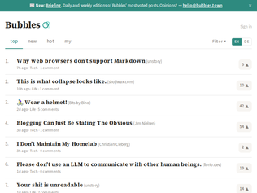
"I’ve been perusing Bubbles increasingly often since discovering that my blog is syndicated there, a few weeks ago.It feels really refreshing compared to doomscrolling of social media, or indeed even to HN. It’s so diverse and humane. The indie blogosphere is coming to life.Kudos to the author. A great idea, splendidly executed. I hope it grows and doesn’t change much."
"This reminds me of Kagi's Small Web: https://kagi.com/smallweb/ or https://kagi.com/smallweb/river"
"Very cool but I would like to be able to create an account with my mail address instead of using a Mastodon account because I am trying to avoid social media."
"I think about Bill Waterson a lot.I certainly don't blame Jim Davis for "selling out". He made a marketable character, and I don't blame him for trying to make his money because of it. I don't have a ton of artistic talent but if I created a lovable comic character and someone offered me a dumptruck full of money to sell toys and t-shirts and cartoons, I'm pretty sure I would take it, and I might even take it even if I felt like it diminished my vision of the comic. I would like to think I have integrity, and I think I do to some extent (there are certain types of companies I will not work for e.g. casinos), but Waterson is on another level.And I have to say, it has made Calvin and Hobbes age a lot better for me. Garfield is almost more of a "brand" than a comic at this point, and it has made it such that I find the character and even the comics kind of (for want of a better word) "cheap" or "tacky". The same can be said for Dilbert (Scott Adams himself not withstanding...I used to genuinely like the comics).C&H, on the other hand, reads about as well now as it did when I was a kid. The jokes still work, the art is appealing, and since there hasn't been this mass-marketing push for it, it has retained a purity unlike anything else.I don't have the integrity or will power that Bill Waterson has, and I probably never will, but it can be something I strive to have some day."
"What a brilliantly written piece. Maintaining one's integrity is unfortunately rare enough that it makes Watterson's story so remarkable. I completely respect and admire his dedication to doing something for its own sake, for holding himself to the highest standards imaginable, and from walking away from it all for his own reasons - even if selfishly I'd rather him keep writing so that there would be more to enjoy. Time to go pull some old volumes of Calvin & Hobbes off the shelf for the hundredth time, I suppose."
"I once posted Bill Watterson's speech to the 1990 graduating class of his alma mater, but it never got to the front pages. I think I tried posting it again, no go. I just made this account so I can try it a third time. More than any comment I could write to some HN post, I wished people would click on the link and read it. Here's hoping some of you will do it, before it's wiped out from the net:https://web.mit.edu/jmorzins/www/C-H-speech.html"
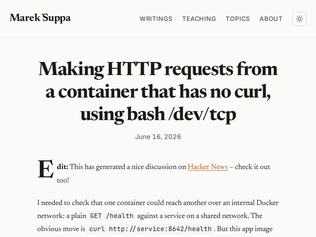
"As a kid in the late 90s my mind was blown when I realized I could telnet to port 80, 25, or 110 and interact with the servers manually.Simple get: GET / HTTP/1.1 Content-Type: text/html User-Agent: l33t hax0rs lol X-Funny-Monkey: fartsFor sending a mail message on port 25: HELO mail-from: whoever@whatever.com mail-to: sysadmin@yaya.com <other headers> <blank line> Body of the message yay. <two blank lines to end>POP3 was so long ago I forgot but you could list the mailboxes then get individual messages and so on.This revelation was the beginning of "there is no magic" for me. The realization that every part of the computer was built by human beings and was at some level understandable if one undertook the effort.Perhaps most people in the future won't bother. They'll just let agents do it all. I'm sure that will leave some interesting holes in various systems for people willing to actually learn how they work without the filter of a model (or its safety rails)."
"Neat, works against example.com exec 3<>/dev/tcp/example.com/80 printf 'GET / HTTP/1.1\r\nHost: example.com\r\nConnection: close\r\n\r\n' >&3 cat <&3 Outputs: HTTP/1.1 200 OK Date: Tue, 16 Jun 2026 17:37:45 GMT Content-Type: text/html ... I always end up on example.com for this kind of thing because there are so few domains these days that don't enforce https!"
"In Plan 9 you did have a real (synthetic) /net, and could do that and more from any program. You could even mount /net from another machine via 9P protocol and have an instant VPN...9front lets you play with that on Linux.Some Plan 9 like /net things are visible in Go libraries... (Rob Pike legacy)"
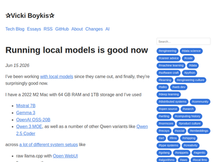
"I don't know about good, I use a lot of local models and they're still pretty painful to run locallyYou have dense models (qwen 27b, gemma 31b) who are pretty smart, but pretty slowYou have MoE models (gemma 26b, qwen 35b, north mini code 30b) who are pretty fast, but make a lot of mistakesYou need a lot of memory to run these well, quantization makes tool calling weaker, so most run at 4 bit quants and are wondering why it kinda sucks and that's because you've essentially lobotomized the model (I recommend unsloth quants, i recommend 6bit for MoEs and 5bit for dense)So you need a lot of compute to make the pre-fill fast, you need bandwidth to make the decode fast, you need a lot of memory to hold everything - lot of ifsOn top of that, your laptop becomes a loud hot churning machine, it's uncomfortable to work with.So are they good? not really. Do they work? yesedit: just wanna clarify - i think open models are the future, i think they're super important, i'm contributing constantly to the ecosystem - i think people should play around with these models, i think people should use `pi` and learn how it all works - but don't download a model expecting it to be good out of the box, you will have to tune and configure a lot of stuff to replace a "coding agent" that most people are using models for"
"After having been a happy user of Qwen3.6-27B for a few weeks, due to being away from the hardware, I'm currently forced to use Claude Sonnet 4.6It is such a downgrade. I don't understand how that's even possible. The thing has so many strongly-held opinions I did not ever ask it for, talking just way too much and generally feeling somehow dumber.Of course, being significantly larger, it will encode more knowledge, but that doesn't help me when I hate talking to it. And all that on top of the fact that talking with it costs real money.I wonder what it might be that makes me hate it so much. Maybe because it doesn't see itself as a tool but almost an equal? As if its opinions would have weight.Qwen too can act like an overeager intern, but if you tell it that it is an idiot, it will drop that ego. Not so much with Claude. In my experience, anyway.Anyway, point is: full ack on that headline."
"This is the kind of thing that Anthropic et al should be worried about. As it becomes easier and easier to run local models, the ceiling of what they'll be able to charge will get lower and lower. Not that nobody will be willing to pay $$$$$ per month, but a lot of people are going to multiply the per-month charge by 12 or 24 and say "Could I set up a local model for less than that, and have it pay for itself within a year or two?" And if a significant portion of customers decide to buy instead of rent, the companies whose business model is entirely centered around renting will suddenly find themselves hurting for customers."
"I stopped using Cursor when I started getting comfortable with Codex/Claude. Cursor is just annoying with the constant popups and it's just not as good. Now my workflow is to use my normal editor, add a todo describing what I want, and then ask Codex+gpt-5.5 to implement it. It absolutely nails it. Using codex is so much more like working with a partner vs the noise and annoyance of Cursor.That said, I think we're in a narrow window of time right now where any of this matters. Prompt "engineering" and working around your tools will be over in a year or so.Fwiw I am a c/c++ systems engineer. I think anyone mentioning anecdotal experience like this should clarify. Maybe frontend JavaScript folks have a totally different take and that's expected."
"A space company is buying an IDE for roughly the cost to build 150 of world's most expensive modern hospitals [1]. How is this in SpaceX's interest? Isn't it kinda bizarre that Elon is pivoting SpaceX to something else?1. https://www.cnbc.com/2026/06/16/spacex-spcx-cursor-acquisiti..."
"Back in the early days of Heroku (when I worked there), we were all fairly deep into the Ruby community. Ruby has never had a great reputation for performance, but... it seemed like almost a running joke that any time you went down a rabbit-hole trying to understand some weird performance issue you'd eventually discover that @tmm1 had already identified the same issue months earlier, patched it in core, and given an hour long talk about it somewhere. Despite his ability and willingness talk publicly about quite deep technical topics Aman always came across as an incredibly quiet and humble in person. Every Ruby developer has benefited from his attention to finding and fixing performance issues. I'm sure the same can probably said for every GitHub user (where he worked for years).Congrats to the entire Cursor team! I don't know all of their stories, but I do like to smile and celebrate a little when I see people who are often hidden in the shadows quietly making things x% better for all of millions of us every day for many years getting reward for that effort."
"Reading the list of Bellard's contributions, what strikes me is not the raw ability (although certainly there is that too!) but "damn, he knows how to pick 'em!"He keeps picking stuff to work on that ends up being insanely useful to a massive number of people. That seems somehow even more remarkable than the technical ability.Deciding what to work on might be the most important question in life."
"It's interesting to me that most of Bellard's work is basically turning specs into C.His most important projects are ffmpeg (codec specs), qEmu (ISA specs), QuickJS (the EcmaScript spec), tinyC (the C spec), and his telecom company (LTE specs). I guess the pi calculations and neural network stuff are exceptions.Just to be clear, this doesn't make his work any less impressive. Highly performant codec and emulator implementations are no easy feat; it's just interesting that most of this work falls into that relatively narrow area."
"Bellard hasn't been involved in FFmpeg for *over 20 years* at this point, and more like 23. His code was not great and reeked of sphagetti due to FFmpeg back then lacking any framework for code sharing between components and codecs. These days none of his code survives. Everything that became of FFmpeg is because of other developers. Yet he's treated as the one-and-only BDFL of FFmpeg, with any other developers building upon his wise framework since time immemorial. These days all he does is hold the copyright, which lets him, *and only him*, elect which project/leader may call itself FFmpeg. He's an unelected dictator, who already used his powers once to ostracize libav developers in favor of another dictator."
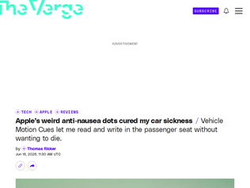
"Never knew this feature existed! I’ve gotten this type of motion sickness my whole life, so I’m excited to try it out. It would be nice if it’s effective for me.I get the same type of nausea described by the author. I can’t read a book or look at a screen for too long without a feeling awful. I can also get it just from sitting in a rear passenger seat, especially if vehicle has poor visibility, and even worse with a bad driver. I have to really focus on looking outside the vehicle at the moving world.Interestingly, I think there are people that have the opposite type of motion sickness. For example, my mom could never play arcade racing games without getting nauseous. The issue being focusing on a screen with rapidly moving objects and everything else in the peripheral being fixed, versus focusing on a fixed object and everything in the peripheral moving. She never had any issue reading a book in a moving car"
"Seems like there's a few android equivalents:https://play.google.com/store/apps/details?id=com.panshen.mo...https://play.google.com/store/apps/details?id=com.urbandroid...And even one that claims to work with sound:https://play.google.com/store/apps/details?id=com.samsung.a1...EDIT: Actually there's an enormous number of apps like this, many released very recently with similar style etc. Weird."
"You might ask why motion sickness even exists in the first place. Why do nausea and vomiting make sense when your body is in a car or on a boat? Nobody knows for sure, but there's a convincing theory.Zillions of years ago, we were foragers. We ate what we found. And if we ate something bad, like a poisonous berry, we could die. One of the first symptoms of neurotoxin ingestion is that your eyes lose their tracking ability. And an easy way for your body to detect this is when your eyes and ears (vestibular system) disagree about your body's position and motion in space.So we presumably evolved a simple rule: if (eyes != ears) { vomit(); } Which gets that bad berry right back out of the system.This is why these Android and Apple gadgets work: they restore visual cues helping your eyes match what your ears are telling you. It's why looking at the horizon on a boat helps. And it's why reading in the car gets some people so horribly sick."
"I've been running GrapheneOS for 7 months now and I'm not going back. When I bought my Pixel 10 last year, I wasn't actually planning on trying Graphene for a while....until I noticed Google had force bundled a 'Wicked For Good' movie promo theme with the latest security update."
"That Motorola phone that lets you install Graphene can not come soon enough. Pixel phones are not sold worldwide so it feels like they're gatekeeping security. I know that's not the case really, but there's very few ways to successfully degoogle otherwise."
"I've been using Graphene on my Pixel 7a for about a year and I'm happy I made the switch. For sure it is a bit rougher than using Google's OS, but not enough to make me regret it.The main things I miss are (1) when I'm entering text I can't swipe left and right on the space bar to scroll the cursor left and right, and (2) the texting app doesn't just attach reaction emojis to a message -- it quotes the whole message and prefixes it with something like "Marty like blahblahblah". When there is a whole family text chain it isn't uncommon to see the same message 7 times as various people react to the original message.Anyway, I looked at Google's Android 17 blog and yikes:"With deep integration between hardware, software and AI, we’re transforming Android from an operating system to an intelligence system. It's about delivering new helpful experiences that anticipate user needs, and it brings more opportunities for engagement with your apps."https://android-developers.googleblog.com/2026/06/Android-17..."
"This article inspired me to build an exploded view of a mechanical watch movement in real-life (2025): https://fellerts.no/projects/epoch.html"
"The author seems too humble to put a giant Patreon link in a popup (it's at the very bottom), but in case anyone wants to know how to support: https://www.patreon.com/ciechanowski/membership?vanity=ciech..."
"As a teacher I understand how difficult it is to explain complex topics in a simple step by step way.The site has some really impressive technical aspects, but the educational angle is the most rare and special! The simplicity of the language and explanations disguise how difficult this is to do.This is the original use of the internet- giving away free knowledge to people, perfectly suited for the medium of a website."
"Cool project, except these aren't really "banned" books. thats a misleading term. In most of these cases, the book isn’t actually banned. Nobody is being arrested for owning it, Amazon isn’t forbidden from selling it, and adults can still read it whenever they want.What’s really being debated is whether a particular school library, children’s section, or curriculum should include a book. That’s not the same thing as government censorship. Schools and libraries make age-appropriate selection decisions all the time. They don’t carry every book ever published, and not every objectionable book belongs in front of kids just because someone wants to call its removal a “ban.” A single school library deciding not to carry a book because they think it's inappropriate, but that same book being available at the local public library, every book store in town, the internet, etc is not the same as the soviet union literally banning the ownership of books."
"“As the Americans learned so painfully in Earth’s final century, free flow of information is the only safeguard against tyranny. The once-chained people whose leaders at last lose their grip on information flow will soon burst with freedom and vitality, but the free nation gradually constricting its grip on public discourse has begun its rapid slide into despotism. Beware of he who would deny you access to information, for in his heart he dreams himself your master.”- Commissioner Pravin Lal, DatalinksAlpha Centauri pertinent as ever."
"Years ago there was PirateBox: flash a small Wifi access point with a custom firmware that's a webserver that hosts a forum/filehost. Their website is dead, but here's a mod of the project; https://www.jasongriffey.net/librarybox/Although, I dread to think what sort of files one would get when user uploads are allowed."
"Lol "fix this code" is beautiful.Like it basically jail broke the "no security vul guard rails" not in any clever way but just by fixing them, producing exploit code just by writing test cases making sure it's fixed. So you just need to look at the code & tests as a human to get vulnerabilities and exploits(components).What makes this so beautiful IMHO is that it's a trivial jail break, but also a close to unfixable. At least not without making the model close to useless for normal development (it refuses to fix bugs/write code) or making it a major liability (it silently pretends it didn't see bugs and silently avoids fixing it, which for a human would count as intentional sabotage and might involve criminal liability)."
"If you set aside political menace, this is a huge problem with Anthropic's strategy.You _cannot_ say that Mythos is super dangerous and can only be rolled out to certain people, but then release Fable with anything other than bulletproof cyber denials.Clearly with LLMs, bulletproof denials are ~impossible due to the way LLMs work.So you've ended up in a situation where Anthropic are simultaneously claiming it's a incredibly dangerous model _and_ there are (minor, potentially) problems with the security "protections".As technical people we understand that nothing can be perfect, esp in LLM world. But all my non technical friends were really confused how they had managed to make the model "safe" so quickly when it was released and the general sentiment was it shouldn't have been released - and now to an outsider I think it looks like it was never safe at all to release, so I can totally see how the current US administration have got themselves very upset with it._Even if_ there was no political bad will, it's a bit of a silly scenario to end up in, and really quite easily foreseen."
"They weren't freaked by anything, it's a retaliatory shakedown after ideological differences and Anthropic not doing exactly what they're told/what the Admin wants them to do."
"Having worked at meta, something I noticed is that the orgs that were well run were ones that were bought. WhatsApp, reality, insta, etc. I worked in an org that was not associated with those products and was purely homegrown and it was awful. Things got done but horribly inefficiently due to over hiring and extreme requirement and schedule shifts.I believe that the cultures that were developed outside of Meta are used to launder the image that meta as a whole has a good engineering culture."
"I think the gloating in this thread is very misguided. Meta is evil, sure, but that's not the point. The point is that this kind of AI psychosis might be the new normal for our industry, or at least one of the new normals. My last workplace absolutely did a jump in toxicity when the CEO got obsessed with AI, instituted token leaderboards, told us all to drop all non-AI work for a time, etc. We were no Meta."
"I do think you have to admire how almost comically insane Zuckerberg is to do stuff like this. If Facebook was being run by someone normal what would happen is it would spend the next 20 years pissing away everything slowly as social media advertising became less and less relevant. But not with Zuckerberg at the helm. He will burn that place to the ground trying to find some way to remain important. Its surprising that people working there apparently thought they weren't going to get burned."
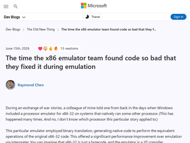
"This reminds me of a story from 15 years ago, where I was developing a technology to download games on demand by hooking into the OS calls.There was a particular game that was superslow when this tech was applied. Original game loading took around 15-20 seconds, whereas once the tech was applied it took easily 3-5 min, even with all data already downloaded.When I started digging into it, I realized the reason was the game was using something like fread(data, 1, 65536, fptr); instead of fread(data, 65536, 1, fptr); Which basically expanded back in the day to 65k reads of 1 byte for several MB file. Each fread translated to 65k reads of ReadFile Windows API. Since my code was hooking on ReadFile system call, and my call was heavier than ReadFile, the game loading felt really slow. Unusable. It would have not been fun for players.The easy fix was to swap arguments for certain calls. The long fix required to use an internal cache to account for these cases so that the hooked ReadFile was faster when data was already in disk.Funny thing is that as we started rolling out the tech and applying it to more and more games we realized lots of games did this. We went for the cache fix and games ended up loading faster than before. Honestly, games could have load all the data in a couple of seconds by just swapping the args. I'm guessing developers did this on purpose so that games seemed like they were loading a lot of stuff, although you never know."
"SimCity had a read-after-free bug that Microsoft patched in Windows 95. That was a lot easier for customers than having Maxis fix it, which could have required exchanging copies of the game."
"I think we're starting to see more of this sort of thing happening now with Proton and Wine gaining prominence in the Linux community. Some games (Elden Ring comes to mind) have bad enough PC ports when they come out that the compatibility layer can incorporate a hotfix to improve performance, while users of the software on the original platform still had to suffer."
"If you're new to Iroh, my mental model is roughly "Tailscale at the application layer instead of the network layer".If your question is, "why not just use Tailscale?", look at it from an app developer's perspective. If you want to release an app and have instances of your app be able to easily connect to each other, you could theoretically embeded Tailscale functionality into your app, but then the users of your app need Tailscale accounts, and your app is dependent on Tailscale.Iroh lets you embed this functionality directly, and provides public fallback relays. If your app gets too big for the public relays, using your own relays is the flip of a switch."
"I am one of the iroh developers.A question that frequently comes up: when will iroh support webrtc, or BLE, or LoRa, or ...Iroh as of now supports only IPv4, IPv6 and relay transports out of the box. There is such a large variety of potentially interesting transports out there that we can't support all of them without turning the codebase into an unmaintainable maze of feature flags.But we have added the ability to implement custom transports. That way your transport implementation can live in a completely separate crate.Existing experimental custom transports include Tor, Nym and BLE. https://github.com/mcginty/iroh-ble-transportHere is how custom transports work under the hood: https://www.iroh.computer/blog/iroh-0-97-0-custom-transports..."
"> Dial keysMaybe it's in the video I didn't watch, but I really think paragraph one should make clear what kind of keys and why. Cryptographic? Asymmetric? How do they do the job, at even the most basic level? It never explains, just dives into abstract claims of superiority and usage stats. I gather relays are involved; this would be a good thing to mention right away instead of making me sift it from the HN discussion."
"> a recruiter at a small crypto startup [...] she described a broken proof-of-concept they needed a lead engineer for, and then sent me a public GitHub repo to review. Specifically, she asked me to “check out the deprecated Node modules issue.”> ...buried between walls of commented-out tests, the payload runs anything the server sends back to your machine.> npm runs prepare automatically after npm install, so just installing dependencies executes the backdoor.> The instruction to “check out the deprecated Node modules issue” was bait to get me to run npm install.Great catch. I've not been phished on LinkedIn before. Surprised it's getting this bad."
"So, this is a crime right? Why isn't there a well known '911' for cybercrime to report things like this to and get help? Society needs to catch up with the actual dangers out there and build support networks for this ASAP. This is organized crime and needs organized defense to deal with it."
"The difference between pre- and post-chatbot writeups is stark: https://igor-blue.github.io/2021/03/24/apt1.html$100 says OP is Claude"
"I have! I care about data privacy and LLMs being free. I'm using the Pi coding harness but containerized and sandboxed, to make sure it's running completely offline. On my Mac Studio with 128GB RAM (or MacBook with 36GB RAM) I'm using Qwen3.6 35b, with only 3b active parameters so that it runs really fast. I've done a complete redesign for my website's homepage and blog with Django + Wagtail. The latter is interesting, because Wagtail is a bit less well-known, so the agent, without giving it internet access, doesn't always know how to develop for Wagtail. I've used Qwen3.5 122b for when things get more complex. At 10b active parameters, it's significantly slower though.I've noticed a few things compared to large models like Claude. For starters, you really need to know what you're asking, and be precise; it doesn't do much thinking for you. Any assumptions left open, and it'll take the easiest route to reach the goal (e.g. CSS in HTML), often not the best in terms of architecture.It gets into loops quite often, and surprisingly often gets the edit tool call wrong, after which it will spend lots of thinking tokens and re-read files instead of retrying (despite the system prompt suggesting so).Comparing agentic Qwen3.6 35b to Claude Opus is like a junior with knowledge across the board, that you really need to guide, versus a senior that thinks with you on architecture. If Opus gives a 15x speedup, local and fully offline Qwen gives a 5x speedup. Which, given that it's completely free, is still mind-boggling to me :)"
"For personal use, yes.I replaced a $100/m subscription to claude in favor of running pi harness pointed at unsloth studio, using both qwen (unsloth/Qwen3.6-35B-A3B-MTP-GGUF) and gemma (unsloth/gemma-4-26B-A4B-it-GGUF) models, depending on my mood.I have a machine I built about 5 years ago with dual RTX3090s in it (I was going to build a new gaming machine anyways, and the llama release had just dropped so I tacked another used 3090 onto the build), and I get ~150tok/s on either of those models (at UD-Q4_K_XL quant) and can use the entire 300k context length without having to exit VRAM.To be very clear - it's not as good as claude. But it's free and not so much worse that it matters significantly.For my personal needs, free beats $100/m.I also have an openclaw instance pointed at the same inference server, and it's great for that (genuinely solid use-case for local models).Some example projects- Replacement launcher for android tvs (with usage monitoring and tracking for kids)- Custom admin portals for my k8s cluster services- Custom home assistant integrations/automations (recently some shelly devices for power monitoring and switching)- Grocery list management and meal planning (mostly via openclaw)- some custom workflows for 3d asset generation in comfyui.---Long story short, if you're trying to make money via software... I'd probably still recommend using a paid provider. But the local models are very capable of cool stuff."
"About 90% of my coding is on Qwen 3.6 27b and Open Code with some custom skills and Semble. It is NOT as smart as CC or Codex but its enough to get most of my work done. I didn't set out to replace CC and Codex (I have an RTX 6000 so the TPS is faster than I care about, but the RTX 6000 was originally for other work). I only tried this just to see how close you could get to a frontier model for coding as an experiment, but it was good enough that I stuck with it. I still fall back to Codex for really complicated stuff and to polish UI's as that seems to be the weakest element to working in Qwen.This isn't a recommendation because I don't think most people have an RTX 6000 laying around and the cost would be many years of MAX CC or Codex subscriptions, but at least this seems possible. Maybe in a few more years it will even be practical.Other Notes: I have had to set the compact target to 75% on a 256k context window as once the conversation length goes about 100k I start seeing a drop in the quality and speed. This becomes very problematic after about 150k. I tried Qwen 3.5 122b too but it actually seems much worse at coding than 3.6 27b even though its much larger. Maybe because I am using a 4bit quant or maybe I just don't have it configured correctly? I know 3.6 is newer but I didn't expect it to out perform a model that is much larger from the prior generation. Gemma 4 31b is a good model for other tasks but at least my personal experience is that Qwen outperforms in coding. Nemotron Super 120b is great at a lot of stuff but it also seems to be not as good at coding as Qwen. This was very surprising to me."
"This is awesome! To offer some constructive feedback: the wind direction could be clearer. More particles flowing across the waters! Especially when the direction is changing. Looking up at the wind teller is unintuitive, even for this old sailor who understands where it comes from. I also didn't always feel like it mattered which direction I angled my sails, only how much I angled them. Like I could angle them for a port wind when in reality I had a starboard wind, and I'd sail just fine.In the other hand that made it easier, and it was already hard enough lol! I bet it's easier on desktop though...Edit: you should add a race/regatta mode!"
"There's a vague correlation between wind direction and sailing speed, but there's nothing real here. The mechanics of sailing upwind, downwind, or the cost of tacking are interesting mechanics that aren't explored here whatsoever. The dead angle on a ship with a square rig should be massive. This ship goes upwind like it has a motor."
"Great! I feel well positioned to say this is great :) I’ve been hoping for something like this.My ideal: slower, more real time, full maps based on actual locations, replay specific naval battles. Multiplayer (maybe it is?), realistic fog of war. I could go onEdit: a few more. Sail trim is clunky and seems unresponsive or unclear how it maps to physics. Would be better to have trim on one side and steering on the other. Also to turn off tacking with tap. Steering too sensitive. The battles are great. (All on mobile)"
"The headline buried the lede -- this is a way to get some summer vacation (niiice) AND encourage enterprise support contracts, which will still have availability. I don't think I've heard of this particular open source / support / summer vacation business model before but I like it!"
"> > The bad guys won’t rest> Probably not. But we will.A pleasant dose of humanity in decidedly inhuman times."
"For the people here who want to do the same when they are vacation (be completely detached from work): Make it impossible for you to work! Leave your work devices behind! Log out of all accounts, remove 2FA keys after backing them up on paper and tell your partner to not give them back to you for the duration of your vacation, etc. I actually went to a country from which I wasn't allowed to work remotely. Crazy but it was that bad for me.Signed: Former workaholic."
"This happens in any industry where value/status are at a premium.Finance, Law, VC guys were good too in the beginning but when the value/status change happens it attracts certain kind of guys who are average in talent but excel in demonstrating value and social management of the value/status.Another change which has happened recently is that the economics of engagement farming have become common place wisdom as already proven effective for everything from selling books, personal brand, career skill/virtue signalling, staying relevant.Due to this everyone is talking more without restraint and not keeping in their own lane of earned expertise."
"I don’t know why you’d think “being interested in nerdy stuff like computers” would somehow translate into virtuous behavior. They seem like entirely different things to me, in the sense that I wouldn’t expect a writer, or a baker, or a chef to have typical ethical behaviors as a group.“What happened” was just that some people got rich and powerful and their real personalities showed through. This is not a new thing in any sense at all, from Rockefeller to Bill Gates – both “technology entrepreneurs”."
"You listen to the Radio Channel you picked. I understand the complaint, though it's like a complain that nerds featured in Cosmopolitan aren't as nerdy as they were.Musk for me was never a nerd. Many "founders" aren't nerds for me. In the end, I wouldn't classify anyone who is "money" first as a nerd - to me they are businessmen (and businesswomen) in their core.Want to see "the lost nerds"? Here, on HN there are many very high-profile nerds. People who built the internet and the most popular tools exchanging insight and jokes over posts. Many founders who aren't loud, who aren't about PR.So - nothing happened. Author looks for them in wrong places."
"The webpage linked is an example of everything I wish people would stop doing in web design.Fortunately, at the bottom there is a link to the "technical documentation" (https://squeezlabs.github.io/handcrank/) which is vastly improved (aside from being light-mode-only and linked from a dark-mode-only marketing page). It also gives me much more interesting information (specifically: models that can apparently run acceptably on a Pi 5).Please let me read your content with a scrollbar that works the way scroll bars are supposed to, rather than turning everything into a weird slide show where you don't actually know when the next slide is coming. Please let me just click on buttons that look like links to more information, without JavaScript."
"My partner just got a rowing machine that offered "watts" as a unit of how hard you're going (like "calories" or "mph") and got me wondering if they made rowing machines that could slowly charge a battery, and how much I'd need to row to power one of them fancy newfangled M5 Max MacBooks answering prompts.All that to say, CrankGPT, I am your target demographic and if you don't respond to my request for a demo I'll be cranking my keyboard with bad reviews online. Or cranking a rowing machine that powers an LLM to do it for me. Wait..."
"I can do high level thinking for around 6 hours with just two scrambled eggs and a cup of coffee.What I need is something to prevent me from context drift. /starts googling how many scrambled eggs are equivalent to the energy consumed by a data center. Google how many chickens are in the world.../"
"I enjoy windows 10 hugely now that it is out of support. It became way better when microsoft started tormenting the users of win11 instead of win10, and now that windows update doesn't bring new catastrophes and unexpected reboot, the OS is finally not interfering with usage anymore."
"> "To avoid the next problem: 'Microsoft locked my data behind bitlocker, and now I can't get it back.' they need to store that key on the MS account."Doesn't that make the account requirement even more scary? So now if MS decides for some reason to lock my account, this will make even the data I have on my local disks inaccessible as well?"
"One thing I disagree with the article about is that drives should not be encrypted by default. For the vast majority of people an encrypted drive is just data loss lying in wait.I prefer to use non-encrypted drives so I have the option of popping out the disk and reading it from another system with ease, which also means that I can recover files from drives of otherwise dead systems just as easily. This is a trade off I'm willing to make over losing access to data.I understand business uses for it, and for that they have an IT team to manage key backup and backups in general. Plus when you're using company equipment it is theirs, not yours."
"This is Apple commoditizing LLMs while keeping control of the UX.They are a hardware company and will keep selling the best machine for AI use. Well done."
"> a Swift package that makes Claude available as a server-side language model in Apple's Foundation Models frameworkAhh I was hoping for the opposite: all of the existing features of Claude Code but somehow running locally on my laptop's neural engine. A pipe dream on an M2 with 8 GB of RAM, but I had a flicker of hope there."
"While I'm happy with Apple introducing this abstraction. my main concern was with local models.I'd love using Gemma4 as an example. but thinking of a user. if 10 Apps each uses same model and downloads it, the phone will be bloated.I still didn't understand if Apple provided a way for multiple apps uses same on-device model (without tricky namespaces and permissions).I didn't see anything suggesting that's the case."
"Hetzner Founder and CEO Martin Hetzner shared a response to the critics in the Hetzner Forum (user benji) over here: https://forum.hetzner.com/index.php?thread/32635-standardisi...Translated from German via Claude:"For better understanding, I would like to provide some additional notes: Hetzner Online's pricing strategy has remained unchanged for many years. Our prices are based on the respective purchasing conditions as well as internal operating costs. The key pricing factors — for example, depreciation periods and profit margins — have remained constant over many years and will continue to do so. The past nine months were an exception. During this period, we have increasingly subsidized new server hardware and passed on the increased purchasing costs to our customers only with significant delay. We are currently observing a similar development at numerous other data center operators as well. The increased purchasing prices will likely lead to a new market level. However, our established price-performance ratio will change as a result only temporarily — if at all — until the market has adjusted to the new conditions. Hetzner Online has always stood for an outstanding price-performance ratio, and that will not change in the future either. I am convinced that the current hardware crisis will neither sustainably improve nor worsen our competitive position. Rather, I expect that our relative position in the market will hardly change even within the new pricing structure. In the short term, shifts may indeed occur, since the individual market participants make their price adjustments at different points in time. In the medium and long term, however, I do not expect any significant changes to the competitive landscape.""
"This is just the reality of hardware costs now. RAM and Disk are scarce, prices have skyrocketed.I wonder how much leverage the hyperscalers like AWS/GCP/Azure have on their own supply chain to keep costs level in their clouds."
"It really is an absolute massive jump. Have no clue what's going on in the back to warrant a 3x increase... 25-50%, sure.. but 3x is wild."


U.S. government will decide who gets to use GPT-5.6
"All: for comments on the technical side please go to the related thread:Previewing GPT‑5.6 Sol: a next-generation model - https://news.ycombinator.com/item?id=48689028"
"This is regulatory capture in action. This will make it hard/impossible for new vendors to come into the market and only established companies will get to play, and charge, for LLMs. What does this mean for open source? Will it become illegal to download weights? What about train your own? Are we heading to a world where GPU use is regulated to ensure that illegal LLMs aren't being processed on your machine? More broadly though, how will this stop anyone but average people? Countries outside the us will completely ignore this and keep developing and moving ahead. Maybe Europe will adopt similar things but the genie is out. I can train insainly powerful models on my laptop. If you want to stop LLMs with legislation you can't do it like this."
"I hope this doesn't become the new norm where government becomes the bottleneck for innovation in the AI space.It's worrying that with no formal and transparent policy framework that the government will be picking winners and losers and stifling innovation.There's been no public policy, executive order, legislation, or otherwise on this, I wonder if anyone has filed FOIA requests for these decisions or the conversations between the Executive Branch and AI companies."